A multi-agent fire environment with exact stressor ablations
A pure-JAX multi-agent environment in which collapse seeds fire, smoke attenuates perception and every stressor switches off exactly, with a pre-registered test as a worked example.
We present the Compound Hostile Environment (CHE), a pure-JAX multi-agent environment in which a cellular-automaton fire burns in every episode. Collapse seeds ignitions (Coupling A), smoke attenuates perception (Coupling B) and communication denial is an independent third stressor; the reward never reads the fire. Severity is placed relative to a measured percolation threshold, switching a stressor off reproduces the environment without it bit for bit under the same random keys, and the code is supplied.
As a worked example, a pre-registered test asks whether one policy trained on co-occurring stressors beats one trained on each in isolation, at matched compute and a held-out near-critical severity. Joint training raises survival by 0.96 percentage points (Šidák-corrected 95 % CI [+0.47, +1.44]), about a tenth of an agent per episode, detectable only in the last fifth of training. The survival gain does not survive the inert-share correction. The correction trains an isolated arm without the third of episodes whose only stressor, communication denial, had no detectable effect in calibration, matching the joint arm’s share of training with an active stressor. Keeping that third was our design error; we registered the correction, outside the pre-registered test, before any outcome contrast was computed. The completion difference excludes a joint-training gain larger than 0.66 points. Both differences are sign unstable over the final half of training.
Because the share of training with an active stressor equals the couplings’ frequencies summed, less their co-occurrence (\(\mu_A + \mu_B - p\)), matching it alone cannot isolate co-occurrence.

Figure 1 is illustrative: it shows one random-policy episode, chosen by a rule fixed before rendering, to explain the environment, and no result in this paper is read from it.
1 Introduction
When a training distribution has to cover several stressors, its designer chooses whether the policy meets them together or one at a time. Ecology studies the interactive and cumulative effects of multiple stressors
The Compound Hostile Environment (CHE), written in pure JAX, makes the question testable in multi-agent reinforcement learning (Figure 1). A cellular-automaton fire burns in every episode, at severities placed below, near and above a measured percolation threshold (§4.1). Two stressors are coupled to the fire: structural collapse can seed ignitions (Coupling A), and smoke attenuates each agent’s observation by Beer–Lambert transmittance (Coupling B); a third, communication denial, is independent (§3.2). The fire is an ambient hazard: the reward never reads it and prices every death the same (§3.3). Switching a stressor off reproduces the environment without it bit for bit under the same random keys, and unit tests check the code against closed forms (§3.4). Section 5 describes how we measure the spread of identical reruns.
We use CHE for a worked example, a test registered before the main training runs. It compares a policy trained with every stressor on (the joint arm, JOINT) with one trained on each in isolation (the isolated arm, ISO), at matched compute, at a near-critical configuration neither arm trained on (§6.2). Joint training raises survival by 0.96 percentage points (Šidák-corrected 95 % CI [+0.47, +1.44]), about a tenth of an agent per episode (0.11 of 12 agents), detectable only in the last fifth of training (the checkpoints at updates 900 to 1000). Completion shows no detectable change, and the difference excludes a joint-training gain larger than 0.66 points. Both differences are sign unstable over the final half of training (§6.3). The survival gain does not survive the inert-share correction. A third of the isolated arm’s training episodes carried only communication denial; against an arm trained without them, joint training shows no detectable survival difference (§6.3). Keeping them was a design error, found before the main training runs; a correcting arm outside the pre-registered test was registered before unblinding, that is, before any outcome contrast was computed (§6.2).
The test was sited where composition is weak: at its severity, Coupling B’s own survival effect in calibration was within a three-seed spread, and communication denial had no detectable effect (§6.1). A post hoc interaction check at the test configuration measures whether the two couplings’ effects on trained policies add (§6.4). Communication denial is labelled inert under a frozen random-projection encoder at this scale; the label rests on coarse acceptance thresholds and is applied asymmetrically across stressors (§4.4). The isolated arm and its corrected version trained every episode that contained a coupling with links intact, while the test configuration denies every link, a train/test mismatch (§6.2). Every learned policy comes from one algorithm, shared-parameter independent PPO
Our contributions are:
- CHE and its code (§3, §8).
- What calibration found: under policies trained for 500 updates, collapse-seeded ignitions fall 4.8-fold from low to high severity, and, descriptively, smoke lowers survival at high severity in 3 of 3 contrasts (§4).
- The worked example and its lesson: matching the share of training with an active stressor cannot by itself isolate co-occurrence (§6.5).
2 Related work
Table 1. Where the hazard enters the learning or planning problem.
| work | agents and method | where the hazard enters |
|---|---|---|
| Haksar & Schwager (2018) |
aerial agents; multi-agent deep Q-network | the task: a reward for moving to burning boundary trees; agents have no damage state |
| JaxWildfire (Çakır et al., 2025) |
one air-tanker agent; JAX simulator | the reward: a penalty proportional to the number of burning cells; agent harm not described |
| safe reinforcement learning (García & Fernández, 2015) |
maximizing return under safety constraints | a constraint or a cost, typically |
| VULCAN (Liu & Yan, 2026) |
proposed fire search and rescue, planned by a vision-language model | a hazard cost map of smoke, heat and sensing uncertainty |
| CHE (this paper) | 12 agents; independent PPO | ambient: transition and observation kernels only; the reward prices each death at \(d_p = 0.5\), whatever its cause |
For Coupling A, the nearest neighbour we found is Raut et al. (2026)
Domain randomization and unsupervised environment design ask which distribution to train on, the latter adaptively
The closest earlier study of our question is Gao et al. (2024)
A survey of adaptability in multi-agent reinforcement learning (Hu et al., 2025, revised 2026)
3 The environment
CHE is a grid world in which a team of agents forages while a fire burns (Figure 2).
3.1 State, step order, fire and smoke
Definition 1 (Compound Hostile Environment). A CHE is a Dec-POMDP \(\mathcal{M}_\theta = \langle I, \mathcal{S}, \{\mathcal{A}_i\}, T_\theta, R, \{\Omega_i\}, O_\theta, \gamma \rangle\) on a grid \(G\), indexed by the environment configuration \(\theta = (\beta, \kappa_A, \kappa_B, \delta)\) of Definitions 3, 5, 6 and 7. Its state \(s = (x, h, \rho, c, k, t)\) holds the agents \(x\) (positions, alive flags \(\alpha_i\), task state), the fire \(h \in \{\mathrm{Fuel}, \mathrm{Burning}, \mathrm{Burnt}\}^G\), the smoke \(\rho \in \mathbb{R}_{\ge 0}^G\), the structure \(c \in \{\mathrm{intact}, \mathrm{collapsed}\}^G\), the link graph \(k\) and the step \(t \le T\). The transition kernel factorizes in this order:
\[\begin{aligned} T_\theta(s' \mid s, a) = {} & T_C(c' \mid c, x)\; T_H^{\beta,\kappa_A}(h' \mid h, c, c')\; T_\rho(\rho' \mid \rho, h') \\ & \times T_X(x' \mid x, a, h', c')\; T_K^{\delta}(k' \mid x'), \end{aligned}\]and agent \(i\) observes the post-step state, \(o'_i \sim O^i_{\kappa_B}(\cdot \mid x', h', \rho', c', k')\).
By Proposition 1 (Appendix A), \(\mathcal{M}_\theta\) is a well-defined Dec-POMDP whose states and observations reachable within the horizon form finite sets. A constant is locked if it was fixed before the main experiment (values in Appendix B, dates in Appendix D).
Definition 3 (Fire and smoke). Each cell is Fuel, Burning or Burnt. At each step, independently for each ordered pair of a Burning cell \(g\) and a Fuel von Neumann neighbour \(g'\), the cell \(g'\) ignites with probability \(\beta\); a Burning cell is Burnt one step later, and Burnt is absorbing. Spontaneous ignition is off (\(\iota = 0\)). Smoke is state, and it outlives flame: per cell,
\[\rho' = e^{-\eta}\rho + \sigma_s \mathbf{1}[h' = \mathrm{Burning}],\]with \(\sigma_s = 1.0\) and \(\eta = 0.5\) fixed by convention, never calibrated, and no spatial smoothing.
Every episode starts from an all-Fuel grid with one Burning cell at a uniformly random position. With Coupling A off, the cells that ever burn then form a bond-percolation cluster with edge probability \(\beta\) (Proposition 2, Appendix A)
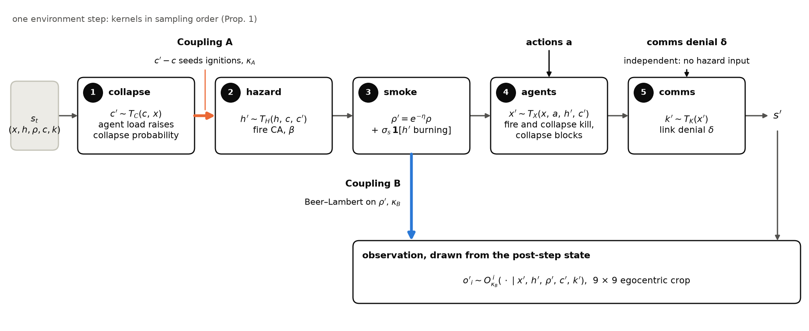
Collapse, fire, smoke, agents and communication are sampled in this order. Coupling A (orange) carries c′ − c into the fire; Coupling B (blue) carries the smoke ρ′ into the observation, drawn from the post-step state. Denial δ enters the communication kernel, which reads no hazard.
3.2 The stressors
Definition 5 (Coupling A, as implemented). Weak terrain \(w(g) \in \{0, 1\}\) marks a clustered fraction \(f_{\mathrm{weak}}\) of the cells, drawn per episode, and \(o_t(g) \in \{0, 1\}\) marks at least one alive agent on cell \(g\) before the step. An intact cell collapses with probability
\[\lambda_t(g) = \big(\lambda_0 + \lambda_{\mathrm{load}}\, o_t(g)\big)\, w(g),\]and collapse is absorbing. Coupling A then ignites, with probability \(\kappa_A\), each cell still Fuel after this step’s spread within Chebyshev distance \(r_A\) of a cell that collapsed in this step: the fire reads the increment \(c' - c\).
Listing 1. Coupling A’s seeding mask: its uniforms are drawn before \(\kappa_A\) is read, and it acts on \(c' - c\) only.
# che/env/structure.py:83-102 (verbatim)
def coupling_a_seed_mask(
key: jax.Array,
collapse_increment: jax.Array,
*,
kappa_A: float,
r_seed: int,
) -> jax.Array:
"""Coupling A (Def. 5): each cell in the seeding neighborhood N_A of a
new collapse (Chebyshev radius r_seed) ignites independently w.p.
kappa_A. `collapse_increment` is the boolean mask of c' - c, i.e. cells
that collapsed *this step* — T_H reads the increment, not the stock.
Returns the candidate ignition mask; `hazard.seed_ignitions` applies it
to Fuel cells only.
"""
chex.assert_rank(collapse_increment, 2)
chex.assert_type(collapse_increment, jnp.bool_)
# Invariant #3: uniforms drawn even when kappa_A == 0.
u = jax.random.uniform(key, collapse_increment.shape)
near_new_collapse = dilate(collapse_increment, r_seed)
return near_new_collapse & (u < kappa_A)
The hazard is not agent-independent: a weak cell with an agent on it collapses nine times as often as an empty one. Below the percolation threshold, with collapses as the fire’s only source and their clusters apart, the expected burnt area grows linearly in the collapse rate (Proposition 3, checked in two runs at parameters other than the locked ones; Appendix A).
Definition 6 (Coupling B, as implemented). For agent \(i\) at \(x_i\) and a cell \(y\) of its crop,
\[\tau_i(y) = \exp\!\big(-\kappa_B\, \lVert y - x_i \rVert_2\, \bar\rho_i(y)\big),\]a midpoint-rule Beer–Lambert transmittance, where \(\bar\rho_i(y)\) averages \(\rho'\) at four evenly spaced points on the line of sight. Each crop cell is revealed independently with probability \(\tau_i(y)\); an unrevealed cell passes zeros, and a visibility plane records the reveal. Setting \(\kappa_B = 0\) gives \(\tau \equiv 1\) (Listing 4, Appendix A).
Because \(\rho'\) is hazard state, perception degrades where and when the fire is active.
In a corridor toy built on the same observation code, ignoring the attenuated signal costs exactly half the probability of being informed before committing, and this cost falls continuously to zero as \(\kappa_B\) grows (Theorem 1, Appendix A); this concerns optimal values in the toy, not learners in CHE.
Definition 7 (Communication denial, as implemented). After the agents move, each directed link between alive agents \(i \ne j\) opens with probability
\[\Pr\big[\, i \to j \text{ open} \,\big] = \mathbf{1}\big[\lVert x'_i - x'_j \rVert_\infty \le R_{\mathrm{comm}}\big]\,(1 - \delta),\]with \(R_{\mathrm{comm}} = 16\) cells. Messages \(m_i \in [-1, 1]^{8}\) from a frozen, randomly initialized message head (Appendix B) arrive one step later as the mean over a receiver’s open links.
\(T_K\) reads positions and aliveness only, so denial is independent of the fire.
3.3 A hazard-blind reward
Definition 2 (Ambient hazard). The hazard is ambient if (i) the reward reads task variables and the agents’ alive transition only,
\[\begin{aligned} R(s,a,s') = {} & R_{\mathrm{task}}(\mathrm{task}(x), a, \mathrm{task}(x')) \\ & - d_p\,\lvert\{i : \alpha_i = 1,\ \alpha'_i = 0\}\rvert , \end{aligned}\]with no term in \(h\), \(\rho\) or \(c\) and no auxiliary cost or constraint; and (ii) \(T_H\) is a fixed stochastic kernel that nothing in the environment optimizes.
In CHE the task variables are the food grid and the alive agents’ positions, and each death costs \(d_p = 0.5\), whatever its cause.
Listing 2. The task reward’s signature admits the food and occupancy grids only.
# che/env/tasks.py:31-43 (verbatim)
def task_step(food: jax.Array, occupancy: jax.Array) -> tuple[jax.Array, jax.Array]:
"""Collection: an occupied food cell yields +1 team reward and empties.
Multiple agents on one food cell still collect a single item (+1).
Returns (food', team_reward). Reads task variables and agent occupancy
only — no hazard/smoke/structure arguments, by design (Def. 2).
"""
chex.assert_type(food, jnp.uint8)
chex.assert_equal_shape([food, occupancy])
collected = (food == 1) & occupancy
reward = collected.sum().astype(jnp.float32)
food_new = jnp.where(collected, jnp.uint8(0), food).astype(jnp.uint8)
return food_new, reward
Two tests check that the reward reads no hazard directly: states that differ only in fire, smoke or structure, with the alive transition held equal, get equal rewards, and a death by fire or by collapse changes the reward by \(-d_p\).
An agent dies only on a cell that is burning or collapsing, so the cause-blind death price is in effect a hazard-contact price, and it drives survival learning. In the one ablation of \(d_p\), raising it from 0 to 0.5 raised survival at High severity (§4.1) from 0.575 to 0.866 (Appendix B). Survival thus enters learning as a penalized channel and completion, at +1 per item, as a rewarded one; any asymmetry between them is read that way.
3.4 Exact nesting, and theory checked as tests
Each stressor is a parameter of one transition or observation kernel: setting \(\kappa_A = 0\) gives a fire that ignores the structure, \(\kappa_B = 0\) the observation before masking plus an all-ones visibility plane, and \(\delta = 0\) free, range-limited communication.
These are nested models because every stochastic branch draws its uniforms unconditionally and compares them with a probability that may be zero. A zero therefore changes comparisons only, and the same keys reproduce the nested model’s trajectory bit for bit on one backend; Listing 5 (Appendix A) is the test for \(\kappa_B = 0\).
The test for \(\kappa_A = 0\) compares fire and smoke only, since agents respond to collapses; the test for \(\delta = 0\) matches, on the CPU, a trajectory hash recorded before the communication channel existed.
Propositions 2 and 3, Corollary 1 and Theorem 1 are exact results that the code is tested against, in toys and at parameters other than the locked ones; the paper claims no theory beyond them.
Table 2. Properties of CHE with the listing (3–5 in Appendix A), test (che/tests/test_*.py, code supplement) and figure carrying each.
| property | listing | test | fig. |
|---|---|---|---|
| step order of Definition 1 (Prop. 1) | 3 |
hazard, lethality
|
2 |
| fire is bond percolation; severity by measured threshold (Prop. 2, Cor. 1) | — | percolation |
3 |
| collapse seeds fire (Coupling A, Prop. 3) | 1 |
coupling_a, prop3
|
1, 4 |
| smoke attenuates perception (Coupling B, Thm. 1) | 4 |
coupling_b, e2c
|
1, 5 |
| communication denial reads no hazard | 3 | comms |
— |
| hazard-blind reward, cause-blind death price (Def. 2) | 2 |
reward_independence, lethality
|
— |
| ablations nest bitwise | 5 |
nesting, coupling_b, comms
|
— |
| locked constants reachable from configurations | — | locks |
— |
| floors per metric, GPU and artifact (§5) | — | — | C1 |
3.5 Instance, training and metrics
Every trained policy, and every evaluation of one, uses one instance: a 64 × 64 grid, 12 agents, a horizon of 256 steps, a 9 × 9 egocentric crop and 32 food items.
Each seed trains one shared-parameter actor-critic policy (Appendix B) with the independent PPO of de Witt et al. (2020)
Both outcomes are per episode: completion is \(1 - F/32\), with \(F\) the food left at the end, and survival is the fraction of the 12 agents alive at the end. Episodes always run to the horizon.
A coupling-co-active counter logs the collapse-seeded ignitions within Chebyshev radius 4 of an alive agent. Only Coupling A produces them and \(\kappa_B\) does not enter the count, so it is co-active only in all-on configurations.
4 What each stressor does
4.1 Severity, placed by a measured threshold
Definition 4 (Severity regimes). For an arena of side \(L\), let \(\xi(\beta)\) be the typical extent of a fire cluster.
- Low, subcritical, \(\xi(\beta) \ll L\): fires stay local.
- Medium, near-critical, \(\xi(\beta) \sim L\): one ignition can cascade to the scale of the arena.
- High, supercritical: the fire front moves about as fast as the agents.
Operationally, each level is the observable band fixed for it before the main experiment (table). The calibration ran the fire alone on all-fuel grids (Figure 3), measuring the spanning probability: the chance that one centre ignition reaches the boundary. Three estimators shipped with the calibration data place the critical point between 0.480 and 0.513, with consensus mean 0.499; the value fixed for the experiment, 0.500 ± 0.005, comes from logistic fits that no committed estimator reproduces. On the infinite square lattice, the idealized kernel’s critical point is exactly ½ (Kesten, 1980)
| severity | \(\beta\) | phase | spanning probability (\(L = 64\)) | burnt fraction | band it was fixed to |
|---|---|---|---|---|---|
| Low | 0.43 | subcritical | 0.021 | 1.9 % | spanning below 0.05, burnt 1–5 % |
| Medium | 0.49 | near-critical | 0.547 | 19.8 % | spanning 0.3–0.7 |
| High | 0.70 | supercritical | 0.998 | 98.3 % | front speed 0.5–1.0 cells per step, measured 0.83 |
Medium, the test severity of §6, lies between the 64-cell arena’s pseudo-critical point, about 0.486, and the fixed critical point. Definition 4 also expected outcomes to vary most at Medium. Re-tested with fixed fire-only policies, that expectation is refuted for survival, whose per-episode variance rises with severity (0.00091, 0.00709, 0.00885).
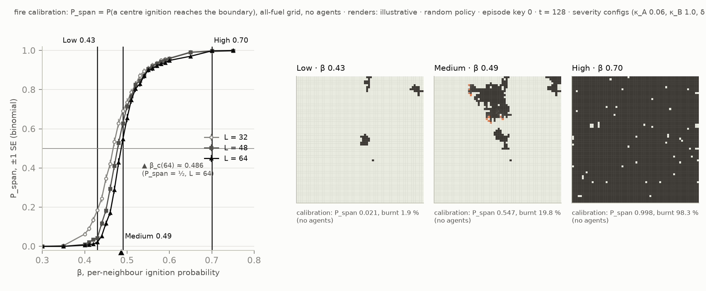
4.2 Coupling A
In the runs of the Coupling-B calibration grid with Coupling B on (500-update policies at each severity), collapse-seeded ignitions per episode fall from 4.05 at Low and 3.41 at Medium to 0.84 at High. This 4.83-fold fall (from unrounded counts) is fuel exhaustion (a seed lights only unburnt fuel), first seen under random policies at about 5.7-fold. The Coupling-A calibration grid (other policies, Coupling A off and on) replicates it at 4.92-fold. In all nine measured cells, the share of seeded ignitions inside an alive agent’s crop stays between 0.164 and 0.203 (Figure 4). Where Coupling A costs survival most is not located: its grid’s survival contrasts rest on two seeds per arm, with no reproducibility floor (§5).
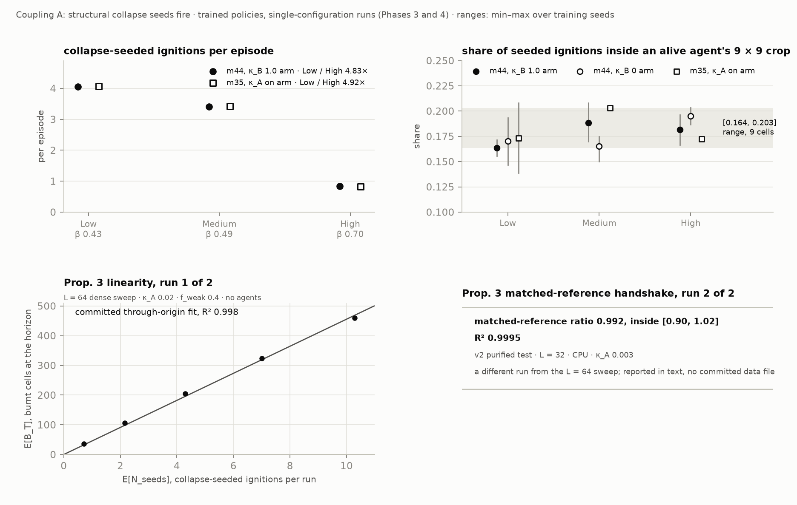
4.3 Coupling B
In the Coupling-B grid with masking on, smoke masks 0.068 %, 0.249 % and 1.559 % of crop cells over all alive agent-steps at Low, Medium and High, and 118, 22 and 16 times that share at moments of danger, when a burning cell is in the crop (Figure 5(a)). At High, survival is lower with masking on than off in 3 of 3 replicate contrasts: −6.87, −10.66 and −4.70 points. Each rests on one run per arm, two share a seed, and none has an interval, so this cost is descriptive and ungraded. The band in Figure 5(b), a High survival floor of 6.21 points from another artifact, is a reference scale (cross-artifact): a spread from other runs, shown for scale only.
At Medium, the test severity, Coupling B’s own survival effect was −0.03 points, judged within noise against a three-seed spread of 0.72 points rather than a measured floor.

(a) Masked share of the crop by severity, over all alive agent-steps and at moments of danger, in the Coupling-B grid (labelled “M4.4” on the figure). (b) The three High survival contrasts, then the first two-seed estimate; the hatched band, labelled floor, is a reference scale (cross-artifact).
4.4 Communication denial
In a denial study at Medium (four seeds), opening the links (δ = 0 against δ = 1) changed completion by +0.38 points and survival by −1.43 points. The acceptance thresholds, 7.99 and 2.60 points, were twice the reproducibility floor on that study’s GPU (§5), and an effect as large as a threshold would clear it only about half the time. We call communication denial “inert under a frozen random-projection encoder at this scale” in this sense only: no effect as large as those thresholds was detected.
The label thus rests on coarse thresholds, and the design applied it asymmetrically across the stressors. Every stressor counted as behaviourally active unless calibration had found it inert, so Coupling A at High (§4.2) and Coupling B at Low and Medium (§4.3) count as active although each is weak there; only δ counts as inert. The composition the worked example tests is therefore, in effect, Coupling A with Coupling B (§6.2). Remark 2′ (Appendix A) refines Pynadath & Tambe
5 Measurement protocol
GPU training is not bitwise reproducible. A reproducibility floor is the standard deviation of a metric over identical reruns of one artifact (the same code, configuration and seed) on one GPU. Under this protocol, an acceptance threshold, or bar, needs a floor measured on the artifact it grades, for that metric and GPU, or the analysis is declared underpowered. Not every comparison has a floor (Appendix C).
A design-stage power statement is a detection limit: the effect a test detects with 80 % power at its family-corrected level \(\alpha\), computed on the contrast’s standard error,
\[\mathrm{MDE}_{80} = \big(z_\alpha + z_{0.8}\big)\,\mathrm{SE}, \qquad \mathrm{SE} = \sqrt{\frac{s_A^2}{k_A} + \frac{s_B^2}{k_B}},\]where \(z\) are standard normal quantiles and \(s_A\) and \(s_B\) are the arms’ seed standard deviations over \(k_A\) and \(k_B\) seeds. A bare \(2\sigma\sqrt{2/k}\) threshold detects an effect of its own size only about half the time, so it only grades an observed effect against a floor, after the fact and labelled. When a confidence interval contains zero, each end is an exclusion bound: at the interval’s level, the data exclude a gain above the upper end and a loss below the lower end, and the larger absolute end bounds the effect’s size. The registration also calls its detection limit X an exclusion bound (§6.3).
The floor is not the test’s variance: arm means also vary by seed, so contrasts are graded on seed dispersion, and the floor only checks that an effect exceeds rerun noise. A logged diagnostic becomes evidence only inside a registered test family, with a floor on its artifact; until then it is recorded, not graded. A difference between arms cannot show an effect present in both. From four identical runs, a floor is itself uncertain by about ±40 %.
6 Worked example: training on stressors together or apart
6.1 What was registered, and what changed
Before the main training runs, we pre-registered the test, its outcomes, a framing for each, and a falsifier.
After the result was known, the paper’s emphasis moved from the test to the environment. The registered framings remain the record of the original plan (Appendix D).
The test was sited where composition is weak. At the test severity, Coupling B’s survival effect in calibration was within a three-seed spread, not a measured floor (§4.3), and communication denial had no detectable effect (§4.4), so the test point may have offered little composition. The registration stated the Coupling-B half in advance, for every outcome: that both couplings meet their fixed-value criteria at Medium “is not the same as both producing behavioural effects there”. A post hoc interaction check measures this (§6.4).
6.2 Design
The isolated arm (ISO) trains on configurations with one stressor on at a time and the joint arm (JOINT) with every stressor on, both at β = 0.43 and 0.70 with one shared-parameter IPPO policy per seed
Let \(\mu_A\) and \(\mu_B\) be the per-coupling frequencies, the shares of episodes with each coupling on, and \(p\) the co-occurrence, the share with both. The active share is the share with at least one behaviourally active stressor; the fire-only share \(\nu\) is the rest. JOINT sees each coupling three times as often as ISO, so Γ mixes frequency with co-occurrence. With communication denial inert (§4.4), the active share equals \(\mu_A + \mu_B - p\): 2/3 for ISO and 1 for JOINT (Figure 6). No contrast in this design moves co-occurrence alone.
One design error inflates Γ. Communication denial had been found inert and so was left out of the secondary sweeps, yet ISO kept two δ-only components of six: a third of ISO’s training episodes are fire-only, and the design did not count them. A review of the registered design found the bias before the main runs; it was registered with its direction and a correcting arm during them, before unblinding. That arm, ISO-4, is ISO without its δ-only components (active share 1), a sensitivity arm outside the confirmatory family with 20 seeds. Γ₄ = JOINT − ISO-4 is the corrected gap; B̂ = ISO-4 − ISO.
ISO’s single-coupling components and all of ISO-4 train with links intact (δ = 0), while JOINT trains and θ* tests at δ = 1. This train/test mismatch is harmless only if δ is inert; the post hoc interaction check (§6.4) holds δ at 1 and cannot address it.
Bias (b), the registered caveat on differential completion drift in the last 100 updates, reverses sign on the grid GPU (the main runs’ GPU), so no direction is claimed (Appendix D).
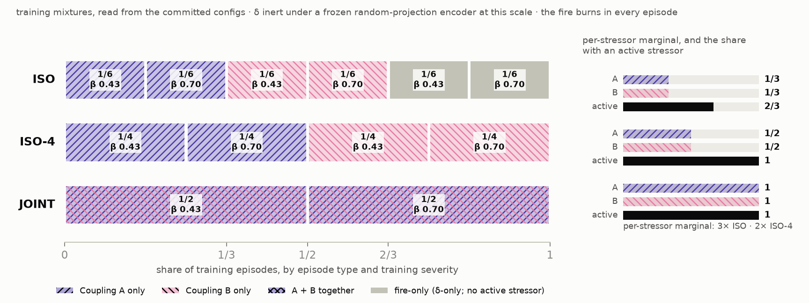
6.3 Results
Every secondary analysis, the plane decomposition included, is non-verdict-bearing, as registered: its 95 % intervals are not family-corrected, and its specification was ratified after Γ was seen and before the sweep was read. A sweep holds each coupling’s frequency at 0.5 while \(p\) moves from 0 to 0.5, and three identification arms at frequency 0.4 make a plane in co-occurrence and fire-only share estimable (Appendix F).
On survival, the plane’s co-occurrence slope \(\gamma_p\) is +3.26 points per unit \(p\) [+1.37, +5.02], and its fire-only-share slope \(\gamma_n\) is −2.37 points per unit \(\nu\) [−4.19, −0.57] (Figure 7, which prints \(\mu\) as m and \(\nu\) as n). By §6.2’s identity, the plane separates co-occurrence from the active share only; per-coupling frequency moves with each slope. The fire-only-share slope predicts ISO-4 − ISO at +0.79 points, inside B̂’s interval, though that move also changes frequency. The co-occurrence slope, fitted on \(p\) up to 0.5, predicts JOINT − ISO-4 at +3.26 points, far above the measured Γ₄ (Table 3): it does not extrapolate to JOINT.
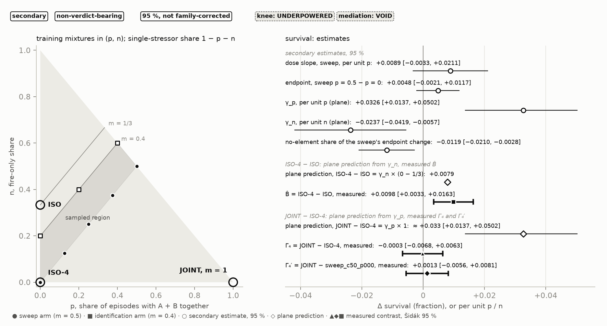
On survival, Γ is +0.96 points, Šidák-corrected 95 % CI [+0.47, +1.44]: REJECT (Table 3; Figure 8 prints rates). On completion it is −1.73 points [−4.12, +0.66], null: no detectable change, and the result excludes a joint-training gain larger than 0.66 points. The design’s completion detection limit, the registration’s X, is 3.29 points; realized power at the 3-point effect that motivated the design was 71.6 %. The registered falsifier passes (Appendix D).
The survival gain does not survive the inert-share correction. Γ₄, the corrected gap, is −0.03 points on survival [−0.68, +0.63], null, and the gain is not called a composition effect. On completion both gaps are null, so Γ₄ is a second exclusion bound, the registration’s term for its detection limit, X₄ = 4.88 points. Γ₄ excludes only a large composition effect: its upper bound, +0.63, lies above Γ’s lower bound, +0.47, and its survival detection limit is 0.90 points. JOINT still sees each coupling twice as often as ISO-4, and always combined. Γ₄ compares runs on two GPUs; its same-GPU replicate Γ₄′, JOINT minus the \(p = 0\) sweep arm (ISO-4’s mixture on JOINT’s GPU), agrees on both co-primaries but was proposed after Γ₄ was seen. B̂ is reported without a test, as registered. Γ = Γ₄ + B̂ holds by construction for arm means, so B̂ is not a second finding. The registered headline for this outcome no longer holds as worded (Appendix D).
Γ(t), the gap at earlier checkpoints, is sign unstable over the final half on both co-primaries. On survival, its Šidák interval excludes zero only at updates 900, 950 and 1000. Completion is negative at every checkpoint from update 700 and leans negative, unresolved (Appendix E).
In agents, the survival gain is about a tenth of an agent per episode (0.11 of 12), detectable only in the last fifth of training. The paper does not rest on it.
Table 3. Arm means (rates) and registered contrasts (points, rate × 100) at θ*, with Šidák-corrected 95 % intervals; k in the order of each contrast’s arms.
| quantity | k | completion | survival | status |
|---|---|---|---|---|
| ISO mean | 72 | 0.7772 | 0.9158 | confirmatory arm |
| JOINT mean | 72 | 0.7600 | 0.9254 | confirmatory arm |
| ISO-4 mean | 20 | 0.7726 | 0.9256 | sensitivity arm |
| Γ = JOINT − ISO | 72 / 72 | null: −1.73 [−4.12, +0.66] | REJECT: +0.96 [+0.47, +1.44] | confirmatory |
| Γ₄ = JOINT − ISO-4 | 72 / 20 | null: −1.26 [−4.81, +2.28] | null: −0.03 [−0.68, +0.63] | sensitivity arm, two GPUs |
| Γ₄′ = JOINT − the p = 0 sweep arm | 72 / 20 | null: −2.47 [−6.16, +1.22] | null: +0.13 [−0.56, +0.81] | secondary, one GPU |
| B̂ = ISO-4 − ISO | 20 / 72 | −0.46 [−4.05, +3.12] | +0.98 [+0.33, +1.63] | no registered test |
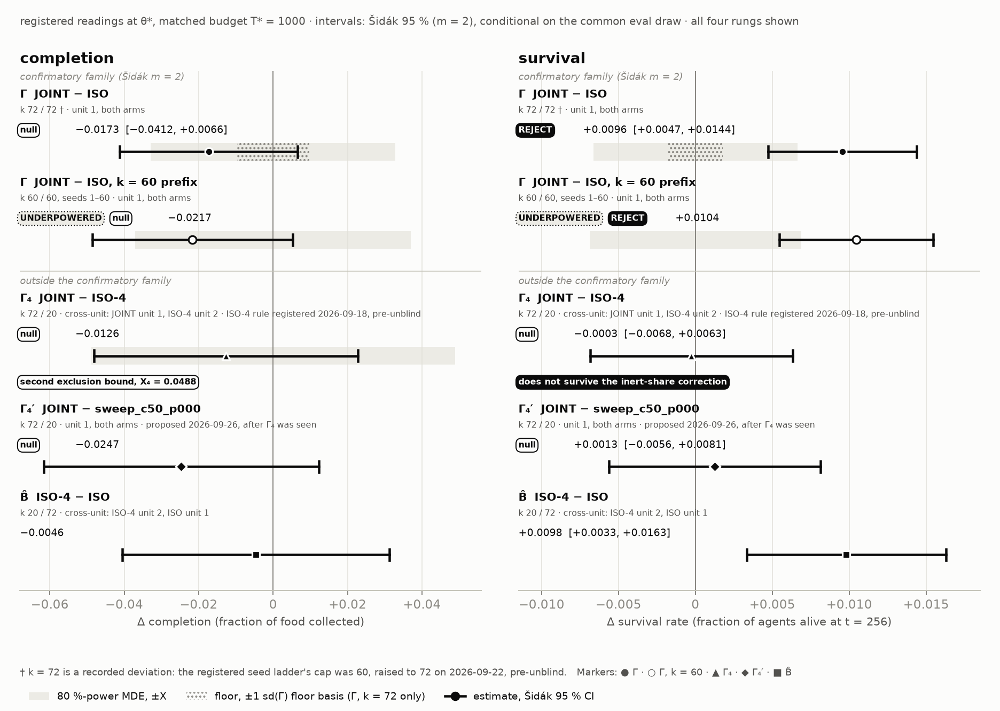
6.4 A post hoc interaction check
To measure what composition θ* offered (§6.1), we added a post hoc, evaluation-only check, planned before it ran and outside the confirmatory family (Appendix G). The final checkpoint of every ISO, JOINT and ISO-4 run is evaluated at θ* in four conditions, neither coupling, Coupling A only, Coupling B only and both, on the registered evaluation draw with common random numbers (§3.4). Per policy and co-primary, the post hoc interaction contrast is
\[I = J(\text{both}) - J(\text{A only}) - J(\text{B only}) + J(\text{neither}).\]Higher \(J\) is better, so \(I = 0\) means that the couplings’ effects add, and \(I < 0\) that together they cost more than their separate costs summed. \(I\) is estimated per arm and pooled, with Šidák-corrected intervals over eight tests and a measured evaluation self-floor (Appendix G).
Besides being post hoc, the check is blind to several things. Holding policies fixed, it cannot say whether training on co-occurrence helps, which Γ tests. It covers θ* only, tests additivity only on the scale of rates, where a ceiling can create or hide an interaction, holds δ at 1, tests no difference between arms, and is conditional on the one evaluation draw. The arms also met the four conditions differently in training (Appendix G), so each arm’s \(I\) also reflects its policies’ familiarity with each condition, which pooling averages but does not remove.
6.5 What the example teaches
By the identity of §6.2, holding the active share fixed while co-occurrence changes forces per-coupling frequency to change with it, so matching the active share alone cannot isolate co-occurrence. None of the study’s designs isolates it. The sweep holds each coupling’s frequency fixed and moves the fire-only share with co-occurrence. The inert-share correction holds the active share fixed and moves frequency along with co-occurrence (§6.3). The plane’s co-occurrence slope holds the fire-only share fixed and moves frequency with co-occurrence.
Two experiments would go further. ISO-4 trained for 2000 updates would meet each coupling as often as JOINT does in the registered budget, at the cost of matched compute, leaving co-occurrence as the main remaining difference. Varying the couplings’ strength, with frequency, co-occurrence and the active share fixed, would test whether composition appears where both couplings are strong (§6.1).
7 Limitations and scope
§1 lists the largest limitations first, and each sits where it arises: how much composition the test configuration offered, and what the post hoc interaction check measured there (§6.1, §6.4); the coarse and unevenly applied inert label for communication denial (§4.4); the communication setting that differs between training and test for two arms (§6.2); and one learner, one map and one team size (§1).
Every comparison in the worked example is at matched compute, 1000 updates per run, and says nothing about other budgets (§6.2). No theorem in this paper says that joint training should win; the hypothesis the worked example tests is empirical. The test configuration is one held-out severity between the two training severities (§6.2). The hazard is simple, with one ignition at reset, a one-step burn and no wind or uneven fuel (§3.1). The only ablation of the death price is narrow, with three seeds, 500 updates and the fire as the only hazard (§3.3). The task needs no coordination, the agents share one set of parameters, and no heuristic or scripted baseline is reported (§1). We compare fixed training distributions and evaluate no adaptive curriculum. Comparisons across GPUs are marked where they occur (§6.3).
8 Using CHE and reproducing the paper
CHE is a functional JAX environment: reset(key, cfg) returns observations and state, and step(key, state, actions, cfg) also returns the team reward, a done flag and an info dictionary. YAML configurations set θ, the fixed sub-parameters and any training mixture, and a test checks them against a registry of the fixed constants (Appendix B).
In the anonymized code supplement, uv run pytest -q che/tests runs the CPU tests, and uv run python -m che.train.ippo and uv run python -m che.eval.harness train and evaluate. On one RTX 5090, a 1000-update run took 518–521 s and a 512-episode evaluation 9–10 s.
The supplement holds the package, configurations, tests, registration documents, analysis scripts with the committed outputs they read, and a sha256 manifest; its README recomputes the registered analyses on a CPU. The post hoc interaction check’s analysis needs version history, so it does not run there. Checkpoints ship only as hashes.
Our registration record is internal and version-controlled, so its dates are self-reported; the hash manifest shows only that the archive arrived unaltered (Appendix D). A public registry such as OSF would remove this limit; we intend to use one next time.
Evaluation reproduces closely: repeated evaluations of two checkpoints on one GPU were bit-identical and matched the main runs’ own, and across GPUs 280 of 288 paired checkpoint and metric values agreed exactly, differing by at most 2.44 × 10⁻⁴. GPU training is not, which is why reproducibility floors are measured (§5).
9 Conclusion
CHE is for studying how stressors coupled to an evolving fire shape what multi-agent policies learn, with each stressor able to be switched off exactly. Its worked example, a pre-registered test of training on stressors together or apart, is read in §6.3 exactly as registered, and §6.5 draws its lesson for how such tests are designed. Next, the corrected isolated arm could be trained until each coupling’s exposure count matches the joint arm’s, and coupling strength could be varied instead of frequency (§6.5).
Appendices
- Appendix A: proofs and formal statements.
- Appendix B: locked constants and hyperparameters.
- Appendix C: reproducibility floors.
- Appendix D: the registration timeline.
- Appendix E: additional results of the worked example.
- Appendix F: the secondary design.
- Appendix G: the post hoc interaction check in full.
- Appendix H: trained-policy episodes.
- Appendix I: how the literature search ran.
- Appendix J: how this paper was made.
A Proofs and formal statements
This appendix states and proves the results that §3 uses. Where a statement departs from the project’s theory document (docs/theory_foundations.md in the code supplement), the departure is noted.
Definitions and results keep that document’s numbers, which the code’s docstrings cite; this is why Definition 2 follows Definition 7 in §3 and the only numbered remark is 2′. The definitions of §3 are stated as implemented, and four depart from the document. Definition 1 draws the observation from the post-step state, smoke included, as the code does. Definition 3 carries the smoke update and fixes \(\iota = 0\), which the document keeps as a parameter \(\iota \ge 0\). For Definition 5, the document states the impulse per collapse event; the implementation draws one uniform per cell, and the two rules coincide wherever seeding neighbourhoods do not overlap. For Definition 7, the document’s range-dependent link probability is implemented as a hard Chebyshev range.
Proposition 1 (Well-posedness and Markov closure). For every \(\theta\), the process \(s_t = (x_t, h_t, \rho_t, c_t, k_t, t)\) under any joint policy is a Markov chain, and \(\mathcal{M}_\theta\) is a well-defined Dec-POMDP: finite-horizon optimal joint policies exist, and the standard value definitions apply.
Proof. Each factor of \(T_\theta\) is a conditional kernel, measurable in its conditioning variables, all of which are components of \((s, a)\) or of already-sampled components of \(s'\). The dependence of \(T_H\) on \(c'\) and of \(T_K\) on \(x'\) is a sequential composition within one time step: sample \(c' \sim T_C(\cdot \mid c, x)\), then \(h' \sim T_H(\cdot \mid h, c, c')\), then \(\rho' = T_\rho(\rho, h')\) (deterministic), then \(x' \sim T_X(\cdot \mid x, a, h', c')\), then \(k' \sim T_K(\cdot \mid x')\). A composition of Markov kernels is a Markov kernel on the product space, so \(T_\theta\) is a valid transition kernel on \(\mathcal{S}\) and \((s_t)\) is Markov. The action sets are finite, every stochastic factor and the reset distribution have finite support, and \(\rho\) evolves deterministically from \(\rho_0 = 0\). The states and observations reachable within the horizon therefore form finite sets; restricted to them, \(\mathcal{M}_\theta\) is a finite Dec-POMDP, and optimal finite-horizon joint policies exist by the standard argument. \(\blacksquare\)
The theory document states that \(\mathcal{S}\) and \(\Omega_i\) are finite. With the real-valued smoke field in the state, that holds only for the states and observations reachable within the horizon, which is all the argument uses.
Listing 3, the body of step, follows the factorization; tl is the episode’s \(\theta\), and no configuration in this paper uses the early frozen control branch.
Listing 3. One environment step in the order of Proposition 1.
# che/env/env.py:298-358 (verbatim)
k_struct, k_seed, k_fire = jax.random.split(key, 3)
# 1. c' ~ T_C(c, x): reads *pre-step* occupancy.
occ_pre = occupancy_grid(state.agent_pos, state.agent_alive, cfg.grid_size)
structure_new = structure_step(
k_struct,
state.structure,
state.weak,
occ_pre.astype(jnp.float32),
lambda_0=th.lambda_0,
lambda_load=th.lambda_load,
)
collapse_increment = (structure_new == COLLAPSED) & (state.structure == INTACT)
# 2. h' ~ T_H(h, c, c'): CA spread, then the Coupling A impulse from the
# collapse increment (seeded cells are Burning in h', spread next step).
seed_mask = coupling_a_seed_mask(
k_seed, collapse_increment, kappa_A=tl.kappa_A, r_seed=th.r_seed
)
hazard_ca = hazard_step(k_fire, state.hazard, beta=tl.beta, iota=th.iota)
if cfg.hazard_mode == "frozen":
# M1.3: h is frozen — the CA/seed draws above still happen and are
# discarded, so dynamic<->frozen with the same key share every
# other stream bitwise (invariant #3). Frozen Burning cells stay
# Burning: lethal and smoke-emitting, but never spread or burn out.
hazard_new = state.hazard
seeded_ignitions = jnp.zeros_like(seed_mask)
else:
hazard_new = seed_ignitions(hazard_ca, seed_mask)
seeded_ignitions = hazard_ca != hazard_new # Fuel cells Coupling A lit
# 3. rho' from h' (Def. 6; smoke outlives flame).
smoke_new = smoke_step(state.smoke, hazard_new, sigma_s=th.sigma_s, eta=th.eta)
# 4. x' ~ T_X + task dynamics. M1.1: lethality/blocking against h'/c'.
# DECISION: an agent disabled this step does not collect food this step
# (it died before/on arrival) — occupancy filters on the post-death
# alive vector, keeping "dead agents never collect" exact.
pos_new, alive_new, deaths_fire, deaths_collapse, blocked_moves = agent_step(
state.agent_pos,
state.agent_alive,
actions,
hazard_new,
structure_new,
collapse_increment,
cfg.grid_size,
)
occ_post = occupancy_grid(pos_new, alive_new, cfg.grid_size)
food_new, task_reward = task_step(state.food, occ_post)
# Def.-2-compliant death penalty: reads only the alpha transition (an X
# variable) — never hazard/smoke/structure directly.
reward = task_reward - th.death_penalty * (deaths_fire + deaths_collapse).astype(
jnp.float32
)
# 5. k' ~ T_K(x'): comms channel (Def. 7, M5.0). Reads post-step
# positions/aliveness only — never h', rho' or c' — and draws from its
# own fold_in stream, so delta cannot perturb any kernel above.
links, links_in_range = _comms_obs(
jax.random.fold_in(key, _COMMS_STREAM), pos_new, alive_new, cfg, tl.delta
)
Listings 4 and 5 carry two claims of §3. In Listing 4 the reveal draw of Definition 6 is made whatever \(\kappa_B\) is, with \(\kappa_B\) read per episode from the state. Listing 5 runs the environment at \(\kappa_B = 0\) with and without masking, under the same keys, and asserts bitwise-identical fire, smoke, structure, food, positions, alive flags and rewards.
Listing 4. Coupling B in the observation kernel: the reveal draw is made whatever \(\kappa_B\) is.
# che/env/observation.py:300-310 (verbatim)
tau = transmittance(
state.smoke, state.agent_pos, kappa_B=state.theta_live.kappa_B, k=k
)
reveal = jax.random.uniform(key, tau.shape) < tau # P(seen) = tau
grid = jnp.concatenate(
[
grid * reveal[..., None].astype(jnp.float32),
reveal[..., None].astype(jnp.float32),
],
axis=-1,
)
Listing 5. With \(\kappa_B = 0\), trajectories and rewards are bitwise those of the environment before masking.
# che/tests/test_coupling_b.py:131-142 (verbatim)
def test_kappa_b_zero_bitwise_recovers_obs_v2():
"""Nesting (M4.1): obs v3 at kappa_B = 0 is the pre-masking env plus a
constant all-ones visibility plane — state trajectories, rewards, and
content planes bitwise identical to obs v2 under the same keys."""
theta = dataclasses.replace(_HOT, kappa_B=0.0)
cfg3 = EnvConfig(grid_size=L, n_agents=4, horizon=64, theta=theta)
cfg2 = dataclasses.replace(cfg3, obs_version=2)
a = _traj(theta, cfg=cfg3)
b = _traj(theta, cfg=cfg2)
_assert_bitwise_equal(
a, b, ("hazard", "smoke", "structure", "food", "pos", "alive", "reward")
)
Proposition 2 (Bond percolation). Under Definition 3 with \(\iota = 0\) and a single ignition at the origin, the set of eventually-Burnt cells is equal in distribution to the open cluster of the origin in i.i.d. bond percolation on \((G, E)\) with edge-open probability \(\beta\), where \(E\) is the arena’s set of von Neumann edges.
Proof (coupling). Attach to each unordered edge \(e = \{g, g'\}\) an independent \(B_e \sim \mathrm{Bernoulli}(\beta)\), and declare that a transmission attempt across \(e\) succeeds if and only if \(B_e = 1\). Each edge is attempted at most once: when one cell of \(e\) first Burns while the other is Fuel, one attempt occurs; afterwards the burning endpoint is Burnt, which is absorbing. If the other endpoint later Burns via a different path, its neighbour across \(e\) is already Burnt, so no second attempt occurs. Run with the variables \(\{B_e\}\), the fire therefore burns exactly the connected component of the origin in the subgraph of open edges \(\{e : B_e = 1\}\), which is the bond-percolation cluster. \(\blacksquare\)
This is the correspondence between an epidemic with a constant infectious period and bond percolation described by Grassberger (1983)che/env/hazard.py:8-16), and with a one-step burn time each unordered edge sees at most one attempt, so these uniforms are the coupling’s per-edge variables. Coupling A, when on, adds ignitions and breaks the hypotheses.
Corollary 1 (Phase structure). On \(\mathbb{Z}^2\) with the von Neumann neighbourhood, the fire of Definition 3 with \(\iota = 0\) and a single ignition at the origin inherits the phase structure of bond percolation (Proposition 2, whose coupling holds on any graph):
- Its critical point is \(\beta_c = 1/2\) exactly, the critical probability of bond percolation on the square lattice (Kesten, 1980)
. - For \(\beta > \beta_c\) the fire spreads indefinitely with positive probability. On that event the cells ignited by step \(n\) are those within \(n\) open edges of the origin. Scaled by \(1/n\), they converge almost surely in Hausdorff distance to a deterministic convex compact set with non-empty interior, invariant under permutations and reflections of the coordinates (Garet & Marchand, 2004; their Corollary 5.4)
. The growth is therefore linear in \(n\), at a speed given in each direction by the extent of that set.
Both items concern the idealized kernel (von Neumann neighbourhood, constant burn time, homogeneous fuel, no wind) on the infinite lattice; CHE’s arena is finite, so §4.1 places the levels against a measured threshold. The theory document’s corollary also lists the subcritical regime and the critical exponents near \(\beta_c\); the paper uses neither, so they are omitted, and its fourth item is numbered 2 here.
Proposition 3 (Collapse events dominate hazard exposure). Work in the subcritical regime \(\beta < \beta_c\) with \(\iota = 0\), and suppose collapse events arrive at rate \(\lambda_A\) per step, each seeding one ignition at a uniformly located Fuel cell, with seeded clusters pairwise disjoint (the sparse regime, \(\lambda_A T \chi(\beta) \ll \lvert G \rvert\), the number of cells). Then the expected burnt area \(B_T\) by time \(T\) satisfies
\[\begin{aligned} \mathbb{E}[B_T] &= \lambda_A T\,\chi(\beta)\,\big(1 + o(1)\big), \\ \text{and in general} \quad \mathbb{E}[B_T] &\le \lambda_A T\,\chi(\beta), \end{aligned}\]where \(\chi(\beta)\) is the mean percolation cluster size. Consequently the marginal hazard exposure per unit of structural instability is \(\partial\,\mathbb{E}[B_T]/\partial\lambda_A = T\chi(\beta)\).
Proof. Each collapse seed grows, by Proposition 2, a burnt cluster equal in distribution to a bond-percolation cluster, of expected size \(\chi(\beta)\). By linearity of expectation over the Binomial or Poisson number of seeds, the total expected burnt area is \(\lambda_A T \chi(\beta)\) when clusters are disjoint; overlaps only remove double counting, which gives the upper bound in general. \(\blacksquare\)
The theory document adds a divergence rate near the critical point, which rests on critical exponents the paper does not state. In a finite protocol the equality is approached only when four conditions are matched, each with a known sign. They are an unconditional cluster-mass reference (a spanning-conditioned one underestimates it), seed location (boundary clipping lowers the mass of uniformly placed seeds), seed age (seeds born late have not reached full mass, which lowers the measured slope; at β = 0.43 mass saturates by an age of about 64 steps), and sparsity (sibling seeds and cluster overlap deflate the measured slope).
Two runs check the proposition, neither at the locked parameters, both without agents or primary ignition at the subcritical Low level (\(\beta = 0.43\), \(\iota = 0\)), so collapse is the fire’s only birth channel. The first, a dense sweep on a 64 × 64 grid (\(\kappa_A = 0.02\), \(f_{\mathrm{weak}} = 0.4\)), fits burnt area against realized seeds through the origin: \(R^2 = 0.998\) over a 14× range of the expected seed count. The second, a slower test in the suite on a 32 × 32 grid (\(\kappa_A = 0.003\)), divides its slope by a protocol-matched reference computed inside the test: 0.992, inside the band [0.90, 1.02], with \(R^2 = 0.9995\). In both, the four factors compose to the observed slope within Monte Carlo error.
Theorem 1 (Memorization gap, and its erosion by Coupling B). Consider the corridor toy at attenuation strength \(\kappa_B\): from a start cell, a path of \(d\) steps leads to a branch \(b\), from which two disjoint corridors \(L\) and \(R\) of length \(\ell\) lead to the goal; the horizon is \(T = d + \ell\) (zero slack: a wrong commitment cannot be undone). At \(t = 0\) nature draws \(Z \in \{L, R\}\) uniformly; corridor \(Z\) burns at depth \(\ell_f \ge 1\) beyond \(b\), and an agent entering it is disabled. The reward is 1 for reaching the goal by \(T\), else 0. At each step \(t = 0, \dots, d\) the agent receives the signal \(Y_t = Z\) with probability \(\tau_t(\kappa_B) = e^{-\kappa_B D_t}\), else \(Y_t = \varnothing\), where the optical depth \(D_t > 0\) of its line of sight to the fire, per unit \(\kappa_B\), does not depend on \(\kappa_B\). Signals are independent across time and remembered. Let
\[q(\kappa_B) = 1 - \prod_{t=0}^{d} \big(1 - e^{-\kappa_B D_t}\big)\]be the probability of being informed by the commitment point. Then (1) the optimal value is \(J^*(\kappa_B) = \tfrac12 + \tfrac12 q(\kappa_B)\); (2) the policies optimal for the fixed-map variant (\(Z \equiv z_0\) constant) include the signal-blind policy “always take the corridor other than \(z_0\)”, whose value on the toy is \(\tfrac12\) for every \(\kappa_B\), so the memorization gap is \(J^*(\kappa_B) - J^{\mathrm{static}} = \tfrac12 q(\kappa_B) > 0\) for all finite \(\kappa_B\); and (3) \(q\) is continuous and strictly decreasing in \(\kappa_B\), with \(q(0^+) \to 1\) and \(q(\kappa_B) \to 0\) as \(\kappa_B \to \infty\), so under total perceptual denial the optimal adaptive policy is no better than the memorizing one.
Proof. (1) With zero slack, the only decision is the corridor choice at \(b\); waiting or probing is impossible within \(T\). If informed (probability \(q\)), taking the corridor other than \(Z\) succeeds with probability 1; if not, both corridors are exchangeable given the history, and any choice succeeds with probability \(\tfrac12\). Hence \(J^* = q + (1-q)\tfrac12 = \tfrac12 + \tfrac{q}{2}\), and no policy exceeds this, since success requires information or a lucky guess. (2) In the fixed-map environment the signal is uninformative, so the signal-blind policy is among the optimal ones there; on the toy it succeeds if and only if \(Z = z_0\), with probability \(\tfrac12\). (3) Because every \(D_t > 0\), each factor \((1 - e^{-\kappa_B D_t})\) is continuous and strictly increasing in \(\kappa_B\) on \((0, \infty)\), so the finite product is too, and \(q\) is continuous and strictly decreasing. The product tends to 0 as \(\kappa_B \to 0\) and to 1 as \(\kappa_B \to \infty\). \(\blacksquare\)
The proof uses only that the signals are independent and remembered, that \(q\) is the probability of being informed, and, in part (3), that \(D_t > 0\). The theory document states the theorem for unit smoke density over the integer distance to the fire, the special case \(D_t = d - t + \ell_f\); this statement departs from it because the implemented toy (che/env/e2c.py) is not that case. The toy runs the production smoke update and observation kernel (Definitions 3 and 6) on a fire cell held Burning, at \(d = 2\) and \(\ell_f = 2\). Its \(D_t\) is therefore the Euclidean distance to the fire times the quadrature mean of a single smoke cell that grows each step. Its depths are \(D_0, D_1, D_2\) = 0.707, 0.898, 0.987, where the integer-distance form has 4, 3 and 2; at \(\kappa_B = 1\) its \(q\) is 0.8115, where that form gives 0.193.
Part (3) fails when some \(D_t = 0\). A larger geometry tried first (\(d = 6\), a 17 × 17 crop) had \(\tau = 1\) exactly at the first two steps, because the four-point quadrature never sampled the single smoke cell at that range, so \(q \equiv 1\) for every \(\kappa_B\).
The toy also leaks \(Z\) through the visibility plane: smoke sits only on the fire’s side, so the mirror corridor’s cell is always revealed, and the pattern of reveals alone identifies \(Z\). \(J^*\) is therefore the value of the content channel (the burning and smoke planes), the only input the scored policies read, which a test enforces. The construction is kin to the irreversible commitment in Proposition 1 of Chen et al. (2022)
The measured value of the policy the proof shows optimal (if informed, take the corridor other than \(Z\); else a fixed one) matches \(\tfrac12 + \tfrac12 q\), with \(q\) computed from the toy’s own transmittances on an independent random stream, under a three-condition check over the sweep of \(\kappa_B\): largest \(\lvert z \rvert\) 2.11, \(\sum z^2 = 6.55\) on 8 degrees of freedom (\(p = 0.586\)), and mean \(z\) −0.44. At \(\kappa_B = 8\) it is 0.5000 ± 0.0055 against 0.5028 predicted (\(z\) −0.51). The memorizing policy stays at ½ (largest deviation 0.0084), and \(J^*(0) = 1.0000\).
Remark 2′ (Value of communication). Extend the corridor toy of Theorem 1 with a second agent; §4.4 refers to this remark. (i) Under a team-any reward, communication has zero marginal value when the agents are interchangeable, expendable (no death cost) and at least as numerous as the hypotheses: coverage then achieves \(J = 1\) under total denial. When any qualifier fails, value returns; in general it scales with the deficit of agents relative to hypotheses, and a death cost, such as CHE’s \(d_p = 0.5\), prices the redundancy that substitution spends. (ii) In the courier variant, where only agent 1 can complete the task and it observes the other agent only through messages, the denied optimum within the no-idle policy class is \(\tfrac12 + \tfrac12 q(\kappa_B)\); with slack \(\ell_f\), optimal denied play buys information by idling at the branch and achieves \(\tfrac12 + \tfrac12 \tilde q(\kappa_B)\), where \(\tilde q\) is the probability of being informed by the commitment point under the best idling schedule, with \(\tilde q \ge q\) (equality iff \(\ell_f = 0\)), so
\[\mathrm{VoC}_{\mathrm{true}}(\kappa_B) = \tfrac12\big(1 - \tilde q(\kappa_B)\big) \le \tfrac12\big(1 - q(\kappa_B)\big).\]Both \(q\) and \(\tilde q\) decrease in \(\kappa_B\), so the value of communication increases with perception decay.
The commitment draws have different optical depths, so as \(\kappa_B \to \infty\) the lowest-depth draw dominates both products and \(\tilde q / q \to 1\). The correction peaks at moderate \(\kappa_B\), and its relative bite on the value of communication is largest at low \(\kappa_B\), where \(q\) is near 1.
In the courier variant with scripted policies, run through the production link kernel and the shared transmittance function, free communication scores 1.0000 at every \(\kappa_B\). The no-idle denied arm matches \(\tfrac12 + \tfrac12 q\) (largest absolute z 0.44; χ² 0.51 on 8 degrees of freedom), so \(\mathrm{VoC}_{\mathrm{gated}} = \tfrac12(1 - q)\) rises monotonically from 0 to 0.498. In this two-agent toy, which is not CHE (4096 episodes and 8192 Monte Carlo draws per point), \(\tilde q / q\) is 1.126 at \(\kappa_B = 1.0\) and peaks at 1.235 near \(\kappa_B = 2\). The correction removes 79 %, 54 % and 7 % of \(\mathrm{VoC}_{\mathrm{gated}}\) at \(\kappa_B\) = 0.5, 1.0 and 3.0.
A transfer bound for a fixed policy (remark). For a fixed policy and two configurations that share the reward, the difference between the policy’s discounted returns is bounded above by a term that grows with how far their transition and observation kernels differ. It follows by telescoping the two models’ evaluation operators along the trajectory distribution. Every configuration the isolated arm trains on (§6.2) differs from the test configuration \(\theta^*\) on the states where both couplings act at once, such as a collapse increment next to Fuel with an agent within attenuation range. There \(\theta^*\) places mass of order \(\kappa_A\) on ignition transitions that a configuration with \(\kappa_A = 0\) places elsewhere, and the observation kernels differ wherever \(\kappa_B\) differs.
The remark bounds what isolated training can be guaranteed to transfer, not what happens. An upper bound on the isolated arm’s transfer does not lower-bound the realized gap; compositional generalization can emerge from isolated training, and the experiment decides. The theory document displays the bound with a constant and concludes more about the isolated arm’s slack than an upper bound can show; this remark draws no such conclusion. Its prediction about exposure to that region was not tested, since the counter of §3.5 cannot measure it.
B Locked constants and hyperparameters
Each constant below was fixed before the main experiment; Appendix D gives when. A test in the code supplement (che/tests/test_locks.py) checks each against the configurations, the code defaults or the analysis scripts that must carry it.
| constant | value | described in |
|---|---|---|
| critical point \(\hat\beta_c\) | 0.500 ± 0.005 | §4.1, with its estimator’s provenance |
| β at Low / Medium / High | 0.43 / 0.49 / 0.70 | §4.1 |
| β held out (\(\theta^*\)) | 0.49 | §6.2 |
| \(f_{\mathrm{weak}}\), \(\lambda_0\), \(\lambda_{\mathrm{load}}\), \(\kappa_A\), \(r_A\) | 0.15, 5e-5, 4e-4, 0.06, 1 | Definition 5 |
| smoothing passes of the weak-terrain field | 2 | Definition 5 |
| \(\kappa_B\) | 1.0 | Definition 6; the bands below |
| δ off / on; \(R_{\mathrm{comm}}\) | 0.0 / 1.0; 16 | Definition 7 |
| death penalty \(d_p\) | 0.5 | Definition 2 |
| observation encoding | the observation as masked by smoke | Definition 6 |
| \(\sigma_s\), η, ι | 1.0, 0.5, 0.0 | Definition 3; not locked, fixed by convention and never calibrated |
The analysis constants of the worked example (§6) are fixed the same way.
| constant | value | role |
|---|---|---|
K_CONFIRMATORY |
40 | design seeds per confirmatory arm, the base of the registered seed rule |
K_LADDER_CAP |
60 | the seed rule’s cap |
K_CONFIRMATORY_REALIZED |
72 | the seed count at which Γ is read (§6.2; history in Appendix D) |
K_SECONDARY |
20 | seeds per secondary arm; ISO-4 uses the same count |
SIDAK_M; \(z_\alpha\) |
2; 2.2365 | the two co-primary tests, Šidák-corrected |
POWER_STOP |
0.80 | the minimum design-stage power |
T_STAR |
1000 | the training budget in updates |
GAMMA_T_RETENTION |
11 | checkpoints kept for Γ(t): updates 500–1000 every 50 |
| evaluation draw | seed 0 × 512 episodes | common to every run; not in the constant registry |
PLATEAU_PASS; PLATEAU_REVIEW
|
1.0; 1.5 | thresholds of a convergence check, retired when the estimand was fixed at a matched budget, before the main training runs |
Every run of the worked example uses the hyperparameters below. The main training runs pass none on the command line, so the configured defaults apply.
| hyperparameter | value |
|---|---|
| learning rate | 3e-4, constant, no schedule |
| discount γ; GAE λ | 0.99; 0.95 |
| PPO clip ε | 0.2 |
| entropy coefficient; value coefficient | 0.01; 0.5 |
| global gradient-norm clip; Adam ε | 0.5; 1e-5 |
| parallel environments; steps per update | 256; 128 |
| minibatches; epochs | 4; 4 |
| checkpoint interval | 50 updates |
| budget | 32,768 environment steps per update, 32,768,000 per run |
| network | two convolutions with 16 and 32 channels, a dense layer of 128 units, actor and critic heads with a 64-unit layer each |
| messages | dimension 8, delivered one step later as a masked mean over open links |
The strength \(\kappa_B\) was to be locked where three bands set before calibration intersect. They were a masked share of the crop at Medium in [0.15, 0.45], a probability in [0.4, 0.7] that a Burning cell three cells away is revealed at Medium, and the corridor toy’s \(q\) (Theorem 1) in [0.3, 0.7]. They do not intersect. The masked-share band cannot be reached at Medium: the masked share can only approach the share of crop cells with smoke on their line of sight, 0.130 there under a random policy, below the band’s lower edge of 0.150. The same \(\kappa_B\) attenuates the arena’s extended smoke more strongly than the toy’s single smoke source, which leaves the detection and toy bands disjoint by a factor of 1.35 under a random policy and 1.15 under probe policies. \(\kappa_B = 1.0\) was therefore locked on the detection band alone; the masked-share band was retired, not widened, and the toy band was kept as a consistency check.
The one ablation of the death penalty \(d_p\) ran the fire alone with no coupling, for 500 updates with 3 seeds per setting, on an older observation encoding; it reports training-log means over the final updates and was not re-run. Raising \(d_p\) from 0 to 0.5 moved survival at High severity from 0.575 to 0.866 and completion there from 0.765 to 0.821. Survival at Medium moved from 0.931 to 0.951, and Low stayed tied, 0.991 against 0.992.
No gradient crosses the communication channel, so the message head, a tanh-bounded dense layer on the shared trunk, stays at its initialization: an agent emits a fixed random projection of trunk features that are themselves trained. The receivers’ weights on the message inputs are trained, which makes message use testable; what to say was never learned.
Listing 6. Delivered messages carry no gradient, so the message encoder stays at its initialization.
# che/train/ippo.py:323-329 (verbatim)
# Messages emitted this step are delivered next step. Nothing crosses
# an episode boundary (autoreset), and stop_gradient states in code
# what the batch-storage already implies: the channel is not a
# differentiable path (Q3 ruling; networks.py docstring).
messages = jax.lax.stop_gradient(
jnp.where(done[:, None, None], 0.0, emitted)
)
C Floors
A floor is the standard deviation of a metric over identical reruns at one seed, so it measures nondeterminism alone (§5). The table lists every floor this paper uses, with its GPU, run length, artifact and number of reruns. Paired values are ISO, then JOINT. Each study is named in plain words with its code (key in Appendix D). The confirmatory arms’ floors use eight reruns, because four leave a standard deviation uncertain by about ±40 %.
| study (code) | GPU, updates | arms or artifact | reruns | floor | use |
|---|---|---|---|---|---|
| four-run Medium floor study (M5.1e) | RTX 5090, 500 | Medium | 4 | completion 0.0145, survival 0.0129 | the content ablation’s Medium threshold |
| denial study (M5.5) | RTX PRO 6000, 500 | Medium, communication range 16 | 4 | completion 0.0399, survival 0.0130 | the denial thresholds (§4.4); the per-GPU exhibit |
| denial study, danger moments (M5.5) | RTX PRO 6000, 500 | Medium | 4 | 27.2 % (sd 0.00182) | voids a 20 % threshold |
| content ablation at High (M5.3b) | RTX PRO 6000, 500 | High | 4 | completion 0.0522, survival 0.0621 | the High content ablation’s thresholds; a reference scale (cross-artifact) in §4.3 |
| refactor of the environment code (M6.0) | RTX PRO 6000 | two code versions | 4 comparisons | reference version: 0 of 760 per-field trajectory hashes differ, in 4 of 4 comparisons; refactored version: differs in 1 of 4 | the per-artifact exhibit |
| confirmatory arms’ floor study, 500 updates (M6.2) | RTX PRO 6000, 500 | ISO, JOINT | 8 | completion 0.0165, 0.0093 | the retired convergence check |
| confirmatory arms’ floor study, 1000 updates (M6.2b) | RTX PRO 6000, 1000 | ISO, JOINT | 8 | completion 0.0339, 0.0483 | set the design seed count, k = 40 |
| the grid’s launch floor study (G1.2 protocol) | RTX PRO 6000, 1000 | ISO, JOINT, sweep arm at p = 0.5 | 8 | sd(Γ) at k = 40: completion 0.00504, survival 0.00310 | design-stage power |
| re-measurement before the grid | RTX PRO 6000, 1000 | ISO, JOINT, sweep arm at p = 0.5 | 8 | the seed rule gave k = 46 | the registered seed rule (Appendix D) |
| re-measurement on the grid’s GPU | RTX 5090, 1000 | ISO, JOINT, sweep arm at p = 0.5 | 8 | completion 0.0587, 0.0577; survival 0.0100, 0.0112 | the seed rule (k = 72); the check that an effect exceeds rerun noise |
| High readout | the grid GPU’s floor runs (1000 updates), evaluated at High on a third GPU of the same model | ISO, JOINT at High | 8 | completion 0.0681, 0.0613; survival 0.0180, 0.0395 | the rerun-noise check at High (Appendix E) |
| evaluation | the same third GPU | two checkpoints | 4 | bit-identical | evaluation reproducibility (§8) |
| partial re-measurement on a second rented GPU | not recorded, 1000 | ISO, JOINT | 8 + 4 | none reported | provenance only |
The grid GPU’s floors cannot be told apart from those of the re-measurement before the grid: the 95 % intervals for the standard deviation overlap (ISO completion: [0.0186, 0.0571] on the RTX PRO 6000, [0.0388, 0.1194] on the RTX 5090). No claim is made that either GPU is less reproducible.
- Thresholds set before the protocol. Before the protocol existed, four thresholds were set on constants the record later called invented. The Coupling-B calibration grid graded its High survival effect against a two-seed spread of 0.0295, below the High floor later measured at 0.0621, and its “strong” grade was retracted. The content ablation at Medium applied a floor hard-coded from the four-run Medium floor study instead of one measured on its own runs. Re-sited at High, it measured its floor first, but matching Medium’s resolution would have taken roughly 46 seeds per arm. The denial study set a 20 % threshold on danger-moment outcomes below that quantity’s rerun nondeterminism of 27.2 %, so that condition is VOID: the observed 23.2 % exceeded the threshold but not the noise.
- The content checks of communication. These used the thresholds in the table’s first and fourth rows. At Medium (two seeds), no pair of actual, zeroed and shuffled messages differed beyond about 3 points; at High, raising the mean number of in-range partners from 1.01 to 2.99 changed nothing.
- Per GPU. The Medium completion floor moved from 0.0145 to 0.0399, 2.75-fold, while survival’s stayed at 0.0129 against 0.0130. The GPU, the code version and the configuration all differed between the two studies, so the exhibit cannot say which of them moved the completion floor.
- Per artifact. In the refactor of the environment code, the reference version’s rerun floor read zero, so two masking diagnostics at High that differed between the versions looked like a semantic change. The refactored version then differed from itself 1 time in 4 on the same channels. An equivalence claim between A and B needs A against A and B against B, as well as A against B.
- The contrast’s standard error. At k = 34, on the 1000-update completion floors and a 0.03 effect, each arm’s own \(s\sqrt{2/k}\) gave 92.1 % and 62.8 % power, where the contrast’s power was 76.7 %.
- The 80 %-power rule. The confirmatory seed count was first set at k = 20 on a bare 2σ figure, without the Šidák correction for the two co-primaries (\(z_\alpha = 2.2365\)). Corrected, completion had 55.6 % power against its motivating effect band, a slip caught before any run.
- Run length. From 500 to 1000 updates, the completion floor grew 2.1-fold for ISO and 5.2-fold for JOINT, with run length confounded with machine.
- Dividing by a floor. A registered convergence check divided each arm’s late-training drift by its floor, so it fired when JOINT’s floor fell faster than its drift. It was retired before the grid, and the estimand was fixed as the gap at a matched budget of 1000 updates.
- Differenced tests. In 24 of 24 rendered episodes of the Coupling-B calibration grid, the alive agents’ centroid drifted towards a wall (rendered-pixel centroids, a diagnostic). That grid’s condition “no cross-arm exposure/positioning difference” could not see a drift present in both arms.
- Coverage. In the secondary design, floors exist only for the sweep arm at p = 0.5; the other sweep arms assume that floor, and the identification arm has none. ISO-4 has no identical reruns, so the contrasts that involve it are graded on seed dispersion alone.
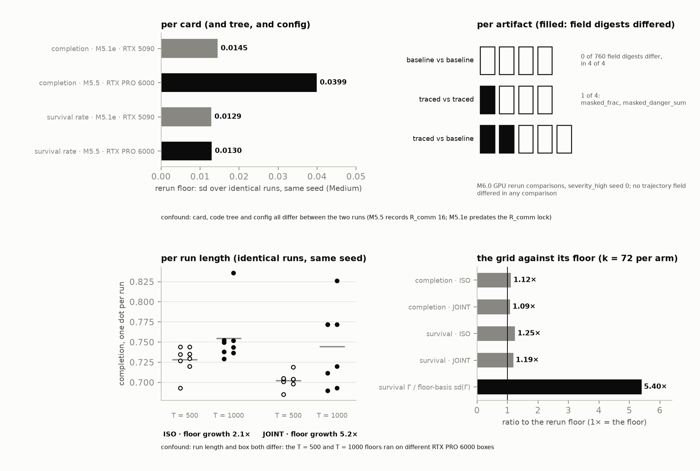
D Registration timeline
This appendix holds the record that the main text leaves out: when each part of the worked example was fixed, what the registration said, which GPU ran what, and how the seeds and archives were kept. Dates are as recorded in the project’s own dated log and documents.
D.1 Registration statement. The registration is an internal, version-controlled record kept in the project’s repository: the frozen design, the outcome framings, and a dated log of the decisions taken during the study. Its dates are self-reported. The code supplement carries the two registration documents, the frozen design and the outcome framings, with a hash manifest of every file it ships, so a reader can compare the quoted registration text with the shipped documents, check with the manifest that the archive arrived unaltered, and rerun the analysis scripts on the committed results. The dated log and the design review are not part of the supplement by default, so the quotations from the log (the estimand, the inert-share rule, the High readout, the 2000-update subsample, the rulings before unblinding and the secondary specification) cannot be checked against the supplement unless log excerpts ship with it. What a reader cannot check is when the documents were written: that rests on the repository’s history, which is not public. We checked that history. The frozen design was first committed on 2026-08-02 and last changed on 2026-08-13; the outcome framings were committed on 2026-08-13 and not changed afterwards; the first provenance file of the main training runs was committed on 2026-09-09, the confirmatory artifact’s hash file on 2026-09-23, and the unblinding log on 2026-09-26 (calendar dates as the commits record them). These are commit dates in a private version-controlled repository, set by the committer’s own clock, so they are self-reported, not externally timestamped. On a future project we would register in a public registry such as OSF.
D.2 Dated events. Each row names the record that dates it.
| date | event | record |
|---|---|---|
| 2026-07-19 to 2026-07-30 | the environment constants are fixed (values in Appendix B): the severities and the death price, then Coupling A, the masking observation, Coupling B, and communication denial with its range | dated log; Appendix B |
| 2026-07-30 | communication denial is closed as inert at this scale (the log’s words are “a certified negative”) | dated log |
| 2026-08-02 | the design is registered; it keeps δ in θ* “for registration fidelity at zero cost”, gives ISO two δ-only components of six, and leaves δ out of the secondary sweeps because it is inert | frozen design |
| 2026-08-02 | survival becomes a co-primary; the secondary sample size, Šidák m = 2 and the mediation void rule are fixed | dated log; frozen design |
| 2026-08-03 | the registered seed count, 40, and the seed rule’s cap, 60, are fixed | dated log |
| 2026-08-10 | the main runs’ launch floor study, on an RTX PRO 6000 | dated log |
| 2026-08-11 | the convergence check is retired, and the estimand is fixed at a matched budget of 1000 updates, with the rule for Γ(t) | dated log |
| 2026-08-13 | the outcome branches, a framing for each and the falsifier are registered | outcome framings |
| 2026-08-13 | the frozen plan is amended: the tests use the main runs’ own seed dispersion | frozen design |
| 2026-08-14 | a partial re-measurement of floors on another rented GPU (provenance only) | the floor study’s own record (results directory) |
| 2026-08-16 | a review of the registered design identifies the inert-share bias in ISO and its direction, before the main runs | design review; dated log |
| 2026-09-08 | floors re-measured on an RTX PRO 6000; the seed rule gives 46 | dated log |
| 2026-09-09 to 2026-09-22 | the main training runs, 252 runs | dated log; results report |
| 2026-09-18 | the bias, its direction, ISO-4 with its reading rule, the High readout and the 2000-update subsample are registered, with 120 of 252 runs done | dated log |
| 2026-09-22 | the seed cap is raised to 72, a recorded deviation | dated log |
| 2026-09-26 | the rulings before unblinding, (i)–(viii), and a fifth outcome cell, \(A_c\) | dated log |
| 2026-09-26 | unblinding, later the same day | dated log; unblinding log |
| 2026-09-26 | the secondary specification is ratified, after unblinding for Γ and before the sweep is read; the same-GPU replicate Γ₄′ is proposed after Γ₄ is seen | dated log |
| 2026-09-27 | every checkpoint archive’s recorded hash is re-verified | results report |
| 2026-10-12 | the framing change (D.10) | dated log |
The design error of §6.2 runs through these rows. The design registered on 2026-08-02 kept a stressor it had already found inert, left it out of the sweeps for that reason, and kept it in ISO. One of its own questions for reviewers rested on the premise that “Neither protocol trains on δ = 1.0”, which is false for both arms: ISO’s δ-only components and both of JOINT’s train at δ = 1. The outcome branches registered on 2026-08-13 did no inert-share accounting. A review of the registered design found the bias on 2026-08-16, noting that the confirmatory arm “applies a different rule to the same fact” as the sweeps. The main runs began without the correction. The correction was registered on 2026-09-18, mid-run and before unblinding, on our attestation, recorded with the decision, that no outcome mean, per arm or across arms, had been computed or viewed. The confirmatory family did not change.
D.3 The registered rules, quoted. Emphasis is the record’s own, one indented code line is set inline, and omissions are marked […]. A “§” inside a quotation refers to the record’s own sections, “card” and “unit” are the record’s words for a GPU, and S1–S6 are its labels for the secondary analyses.
The estimand (2026-08-11):
Primary Γ = the confirmatory contrast at MATCHED BUDGET T = 1000, all arms — registered as a fixed-budget claim.
“At convergence” is explicitly NOT claimed anywhere. The paper says “at matched compute” throughout, which is also the practitioner-relevant question. […]
Budget robustness (same ruling; restated for every branch on 2026-08-13):
The fixed-budget conclusion is reported as budget-robust iff the sign of Γ is stable over the final half of training. If the sign is still moving at T, that instability IS the finding and is reported as such.
Mechanism: 11 retained checkpoints, updates 500–1000 at interval 50, confirmatory arms only, evaluated post-unblind. Every branch above gains “— budget-robust” or “— sign unstable over the final half” as a suffix, and the suffix is not optional.
The test’s variance (the frozen plan, amended 2026-08-13):
The confirmatory tests and CIs are computed on the GRID’S OWN measured per-arm seed dispersion, not on the floors. The floors are 8 identical reps at one seed; the grid averages over k distinct seeds, and those are different variances. The floors keep exactly two narrower roles: the beat-reproducibility hurdle, and a design-stage power basis registered as an UPPER BOUND (§5, superseded note, item 2). […]
The outcome branches (2026-08-13). “Positive” and “null” mean rejection or non-rejection at θ* in the confirmatory family, and “−” means rejection with negative sign (ruling (i) below). The registered table’s venue column is omitted. \(A_c\) was added on 2026-09-26, before unblinding, for a cell the table lacked.
| branch | completion | survival | headline claim, as registered (\(A_c\): its registered claims, summarized) |
|---|---|---|---|
| A | + | + | founding registration, verbatim [Γ(θ*) > 0] |
| B | null | + | composition is paid in agents, not task return |
| C | null | null | the instrument, and what it excludes |
| D | − (either) | [− (either)] | not separable from the matched-budget asymmetry |
| \(A_c\) | + | null | the founding claim on the founding primary; the survival null quoted as an exclusion; no asymmetry claim |
In row D, “− (either)” means rejection with negative sign on either co-primary; the registered table writes it once, under completion, and square brackets mark our additions.
The same document lists the environment and measurement items as standing on every outcome, “the larger part of the paper”, which “does not depend on Γ at all”. Three of its entries overclaim and are not repeated in this paper: a threshold value with no committed estimator behind it (§4.1 gives the committed estimators), communication denial “certified inert at swarm scale” (§4.4 gives the scoped phrase and its bars), and floors “ordered by curriculum difficulty”, an untested hypothesis.
The falsifier for branch B (2026-08-13):
Branch B is claimable only if the completion contrast excludes an effect as large, in standardized units, as the observed survival effect:
|z_c| + z_α < |z_s|, z = Γ / sd(Γ) per metricwith
sd(Γ)the grid’s own measured per-arm seed dispersion in the combined form andz_α = 2.2365the two-sided Šidák critical value at m = 2. If it fails, the result is branch C with an asymmetry the design could not resolve — not branch B.
It passes: with \(z_c\) and \(z_s\) the two statistics, \(\lvert z_c\rvert + z_\alpha = 3.855 < 4.433 = \lvert z_s\rvert\), and 4.040 < 4.673 in the registered 60-seed analysis. Under Definition 2 the asymmetry is between a penalized channel and a rewarded one: the reward prices every death at \(d_p = 0.5\) whatever its cause and never reads the hazard. The result is branch B, completion null and survival positive. Branch A, the founding hypothesis, did not occur, and neither did \(A_c\). Branch B’s registered headline, “composition is paid in agents, not task return”, no longer holds as worded, because the survival effect does not survive the inert-share correction (§6.3); the branch label stays B, because the rule below fixes it by Γ.
The inert-share rule (2026-09-18):
- Γ and Γ₄ are reported side by side on every branch, with B̂ and its CI.
- If Γ rejects on a co-primary and Γ₄’s CI on that co-primary includes 0 or its sign is opposite, the paper states that the effect does not survive the inert-share correction, in the abstract-level summary and not only in an appendix. The branch label does not change — it is fixed by Γ — but branch A/B text may not describe the effect as a composition effect without that qualifier.
- If Γ is null and Γ₄ is null, Γ₄ is quoted as a second exclusion bound.
- If Γ is null and Γ₄ rejects negative, it is reported under branch D’s framing (matched-budget asymmetry) as a secondary observation, never as a confirmatory finding.
- No magnitude threshold on B̂ is introduced, now or later.
The High readout (same ruling):
- Γ_H null → an a fortiori exclusion, and the only outcome this readout can establish: “no gap larger than X at High even where JOINT trained on the evaluated configuration and ISO never saw a composed one.” Quoted as an exclusion with X from the grid’s own seed dispersion, never as an absence. […]
The same entry states that the readout “is NOT a held-out test”, that a positive \(\Gamma_H\) is “NOT separable from in-distribution advantage”, and that a negative one is “exploratory”.
The 2000-update subsample (same ruling):
What it may be cited for: whether the differential drift measured at T = 1000 (review §6 item 1: 0.01209 per 100 updates) visibly persists, closes or reverses. What it may not be cited for: any claim that Γ “holds” or “vanishes” at T = 2000.
The mediation void rule (the frozen plan, 2026-08-02):
If realized dose does not vary with assigned p, the dose figure has no x-axis and is declared VOID — registered now, not decided after seeing the first stage.
The rulings before unblinding (2026-09-26):
| # | question | RULED |
|---|---|---|
| (i) | what “−” means in the branch table | Rejection with negative sign (|z| > z_α, Γ < 0). A negative estimate that does not reject is a null. Ratified as built. |
| (ii) | the cell (completion +, survival null), absent from the registered table | REGISTERED NOW as branch A_c — the founding claim on the founding primary. […] |
| (iii) | test statistic | Normal z, z_α = 2.2365, as the frozen plan wrote; the t critical value is printed, not applied. Ratified as built. |
| (iv) | Γ(t) “sign stable” | All 11 point estimates, t = 500 … 1000, share one nonzero sign, per co-primary; t = 1000 is the grid’s own eval. Consequence accepted in advance: on a null Γ, chance flips read UNSTABLE. Ratified as built. |
| (v) | Γ₄ sample and threshold |
JOINT k = 72 vs ISO-4 k = 20, SE sqrt(s_J²/72 + s_4²/20), “rejects” and “CI includes 0” at z_α = 2.2365. (Γ null, Γ₄ rejects positive) stays UNREGISTERED. Ratified as built. |
| (vi) | Γ_H reading | As (i), at z_α = 2.2365. Ratified as built. |
| (vii) | primary k | k = 72 stays primary; the registered-ladder k = 60 prefix is reported beside it, UNDERPOWERED-flagged. |
| (viii) | re-evaluate the 144 T* = 1000 checkpoints on the post-unblind card | YES. […] |
In (viii), “the post-unblind card” is GPU 3 (D.6).
The secondary specification (2026-09-26, after unblinding and before the sweep was read):
(S1) PAVA + OLS slope CI; (S2) single-hinge breakpoint, UNDERPOWERED iff the CI spans {0.125 … 0.375}; (S3) plane fit, bound = 95 % CI of 0.5·γ_n; (S4) training co-activity over updates 1…1000, VOID iff the first-stage CI contains 0; (S5) the same-card replicate is ADDED, beside Γ₄, unable to change its qualifier; (S6) 95 % intervals, Γ₄′ at z_α. […]
The omitted words name the code version, which would identify the repository.
D.4 The seed rule. The design registered k = 40 seeds per confirmatory arm and a rule, capped at 60, that recomputes k from floors re-measured on the GPU that would run the main training runs. On the launch floor study of 2026-08-10 the design-stage detection limit at k = 40 was 1.55 completion and 0.95 survival points. The rule gave 46 on the RTX PRO 6000 floors of 2026-09-08, and 72 on the RTX 5090 that ran the confirmatory runs. The rule’s registered action at the cap was “PROCEED at k = 60 and DEGRADE HONESTLY, never chase”. On 2026-09-22 the cap was raised to 72 instead, before unblinding and with no outcome seen; this is a deviation from a registered rule, recorded as one. Seeds 1–60 are a prefix of the 72, so the registered 60-seed analysis is reported beside the primary one (Appendix E). On the RTX 5090’s floors, design-stage completion power at a 3-point effect was 72.2 % at k = 60 and 80.4 % at k = 72, an upper bound because floors measure rerun noise alone; realized power was 60.2 % and 71.6 %.
D.5 Bias (b). The registered caveat on differential drift is the difference between JOINT’s and ISO’s completion drift over the last 100 of 1000 training updates, quoted as a local sensitivity estimate and never as a bound. Four floor studies read it at 1000 updates: +0.0242 per 100 updates on the confirmatory arms’ earlier floor study, +0.01209 on the launch floor study and +0.0179 on the 2026-09-08 re-measurement, all three on an RTX PRO 6000, but −0.0083 on GPU 1. Bias (b) therefore reverses sign on the grid GPU, and no direction is claimed. In the 2000-update subsample, the differential training-log slopes over updates 500–1000 are +0.00247 for completion and +0.00718 for survival per 100 updates, a different estimator from the floor studies’.
D.6 GPU blocks. The runs analysed here used one GPU model, the RTX 5090, on three rented units. GPU 1 ran Γ: all 72 seeds of ISO and JOINT, of which 76 runs were executed there and seeds 13–46 were copied from the main runs. GPU 1 also ran every analysed secondary run, so Γ₄′ is a same-GPU contrast. GPU 2 trained ISO-4 and the 2000-update subsample, so Γ₄ and B̂ compare runs on two GPUs, and GPU 3 ran the evaluations after unblinding. Seeds 1–12 of all ten arms first ran on an RTX PRO 6000; those runs were superseded, enter only a descriptive diagnostic of the GPU effect, and the secondary arms’ seeds 1–12 were re-run on GPU 1 (96 runs).
D.7 Study codes. The project’s internal codes appear on some figures and in the supplement. Their plain names:
| code | plain name |
|---|---|
| M3.0 | the re-test of Definition 4’s prediction that outcomes vary most at Medium |
| M3.3 | the check of Proposition 3 against its closed form |
| M3.4 | the Coupling-A calibration under random policies |
| M3.5 (printed m35) | the Coupling-A calibration grid |
| M4.2 | the check of Theorem 1 in the corridor toy (printed E2C) |
| M4.4 (printed m44) | the Coupling-B calibration grid |
| E1.1 | the severity response of collapse-seeded ignitions near agents |
| M5.1e | the four-run Medium floor study on an RTX 5090 |
| M5.2 | the check of Remark 2′ in the two-agent courier toy (printed E2C²) |
| M5.3, M5.3b | the content ablation at Medium, and the same ablation at High |
| M5.5 | the denial study |
| M6.0 | the refactor of the environment code |
| M6.2, M6.2b | the confirmatory arms’ floor studies at 500 and 1000 updates |
| G1.2 | the floor-study protocol of the main runs: the launch floor study (2026-08-10) and its re-measurements of 2026-09-08 and on the RTX 5090 |
| G1.3 | the main training runs |
D.8 Seeds and archives. All arms share seed integers, and seed 0, the floor seed, never enters the main runs. Runs are ordered seed-major and chunks end on seed boundaries, so an interruption leaves a smaller balanced design and both arms of a seed share one GPU. Every checkpoint archive’s recorded sha256 matched on re-verification on 2026-09-27, 615 of 615; the hashes ship with the supplement’s result directories, not here.
D.9 Blinding. The runner of the main training runs computes no cross-arm quantity, and a unit test asserts it. Each analysis stage ran once: the unblinding script refuses an unflagged artifact or a modified code version, later analysis scripts refuse to run before its log exists, and each log records one run of its stage.
D.10 The framing change. On 2026-10-12, after the result was known, we moved the paper’s emphasis to the environment, and the pre-registered test became its worked example (§6.1). No constant, registration or registered reading changed. The registered outcome branches and their framings, quoted in D.3, remain the record of the original plan.
E Additional results
Sign unstable over the final half, on both co-primaries: neither meets the registered rule that all 11 point estimates over updates 500–1000 share one sign (Appendix D). The intervals are Šidák-corrected, registered at update 1000 and descriptive before it. Checkpoints before update 1000 were evaluated after unblinding, on a different GPU of the same model; update 1000 is the main runs’ own evaluation, and re-evaluating it on that GPU leaves every sign unchanged (§8). On Figure E1 the registered sign rule is labelled “rule (iv)” and the main runs’ GPU “grid card”, and the “single-card curve” re-evaluates the last checkpoint on another GPU.
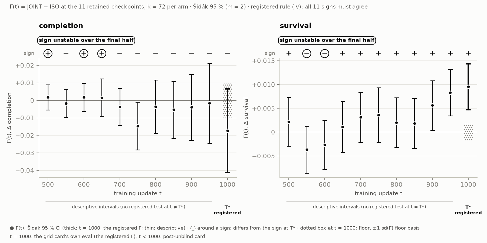
Completion, k = 72 per arm, in rates:
| update | Γ(t) | sd(Γ) | Šidák CI | sign |
|---|---|---|---|---|
| 500 | +0.0017 | 0.00321 | [−0.0055, +0.0089] | + |
| 550 | −0.0017 | 0.00353 | [−0.0096, +0.0062] | − |
| 600 | +0.0018 | 0.00362 | [−0.0063, +0.0099] | + |
| 650 | +0.0015 | 0.00481 | [−0.0093, +0.0122] | + |
| 700 | −0.0037 | 0.00470 | [−0.0142, +0.0068] | − |
| 750 | −0.0147 | 0.00610 | [−0.0283, −0.0010] | − |
| 800 | −0.0035 | 0.00677 | [−0.0187, +0.0116] | − |
| 850 | −0.0053 | 0.00729 | [−0.0216, +0.0110] | − |
| 900 | −0.0039 | 0.00843 | [−0.0228, +0.0149] | − |
| 950 | −0.0016 | 0.01021 | [−0.0245, +0.0212] | − |
| 1000 | −0.0173 | 0.01068 | [−0.0412, +0.0066] | − |
Survival rate, k = 72 per arm, in rates:
| update | Γ(t) | sd(Γ) | Šidák CI | sign |
|---|---|---|---|---|
| 500 | +0.0022 | 0.00228 | [−0.0029, +0.0073] | + |
| 550 | −0.0037 | 0.00220 | [−0.0086, +0.0013] | − |
| 600 | −0.0027 | 0.00232 | [−0.0078, +0.0025] | − |
| 650 | +0.0011 | 0.00242 | [−0.0043, +0.0065] | + |
| 700 | +0.0031 | 0.00235 | [−0.0021, +0.0084] | + |
| 750 | +0.0036 | 0.00255 | [−0.0021, +0.0093] | + |
| 800 | +0.0020 | 0.00232 | [−0.0032, +0.0072] | + |
| 850 | +0.0018 | 0.00234 | [−0.0034, +0.0071] | + |
| 900 | +0.0056 | 0.00231 | [+0.0004, +0.0108] | + |
| 950 | +0.0083 | 0.00219 | [+0.0034, +0.0132] | + |
| 1000 | +0.0096 | 0.00216 | [+0.0047, +0.0144] | + |
The registered k = 60 analysis, on seeds 1–60, reads as the k = 72 analysis does and is flagged UNDERPOWERED; the registered seed rule had required 72 seeds for completion. Completion is null at −2.17 points [−4.86, +0.52], z −1.80, and survival rejects at +1.04 points [+0.54, +1.55], z +4.67, with Šidák-corrected intervals. Realized completion power against a 3-point effect is 60.2 % at k = 60 and 71.6 % at k = 72.
The 2000-update subsample (4 seeds per arm, trained on a second GPU of the same model) is descriptive and UNDERPOWERED by registration. Its Γ(2000) is +0.03 points [−3.63, +3.69] on completion and +1.59 points [−0.02, +3.19] on survival, with 95 % intervals that are not family-corrected. The difference between JOINT’s and ISO’s training-curve slopes stays positive over updates 1000–2000, at +0.00384 (completion) and +0.00204 (survival) per 100 updates, as it was over updates 500–1000. The drift it measures has not visibly reversed, which is all it may be cited for.
The High-severity readout re-evaluated every final checkpoint of ISO, JOINT and ISO-4 with every stressor on at β = 0.70, outside the confirmatory family. Both co-primaries are null, so the reading is an a-fortiori exclusion: no gap larger than 3.40 completion points or 2.54 survival points at High even where JOINT trained on the evaluated configuration and ISO never saw a composed one. Those two values are the readout’s 80 %-power detection limits (the registered sentence’s X), and its Šidák-corrected intervals are [−3.26, +1.68] (completion) and [−1.46, +2.23] (survival) points. JOINT − ISO-4 at High is null too, at −0.75 [−3.87, +2.36] and −1.28 [−3.50, +0.95] points, with no reading rule of its own. The JOINT − ISO gap lies within rerun noise, at 0.73 and 0.75 times its floor-based standard error (completion, survival); ISO-4 has no identical reruns, so that check is UNDERPOWERED for it. The readout is not a held-out test: JOINT trained on this configuration at weight 1/2, and ISO never trained with more than one stressor on.
On secondary metrics outside the family, descriptive and without a floor, JOINT has 0.1177 fewer fire deaths per episode than ISO (z = −4.59), at 0.6949 against 0.8126, and its episode return differs by −0.4958 (z = −1.44).
Seed dispersion exceeds the rerun floor in both arms, 1.12 and 1.09 times on completion and 1.25 and 1.19 times on survival (ISO, JOINT). Survival Γ, at 5.40 times its floor-based standard error (completion 1.78 times), clears the check that an effect exceeds rerun noise.
Figure E2 shows the measurements behind the inert label of §4.4; on it the two-agent courier toy is labelled “E2C²” and “M5.2”, and the denial study “M5.5”. In the two-agent courier toy, the value of communication rises from 0 to 0.498 as perception decays (Figure E2(a)).
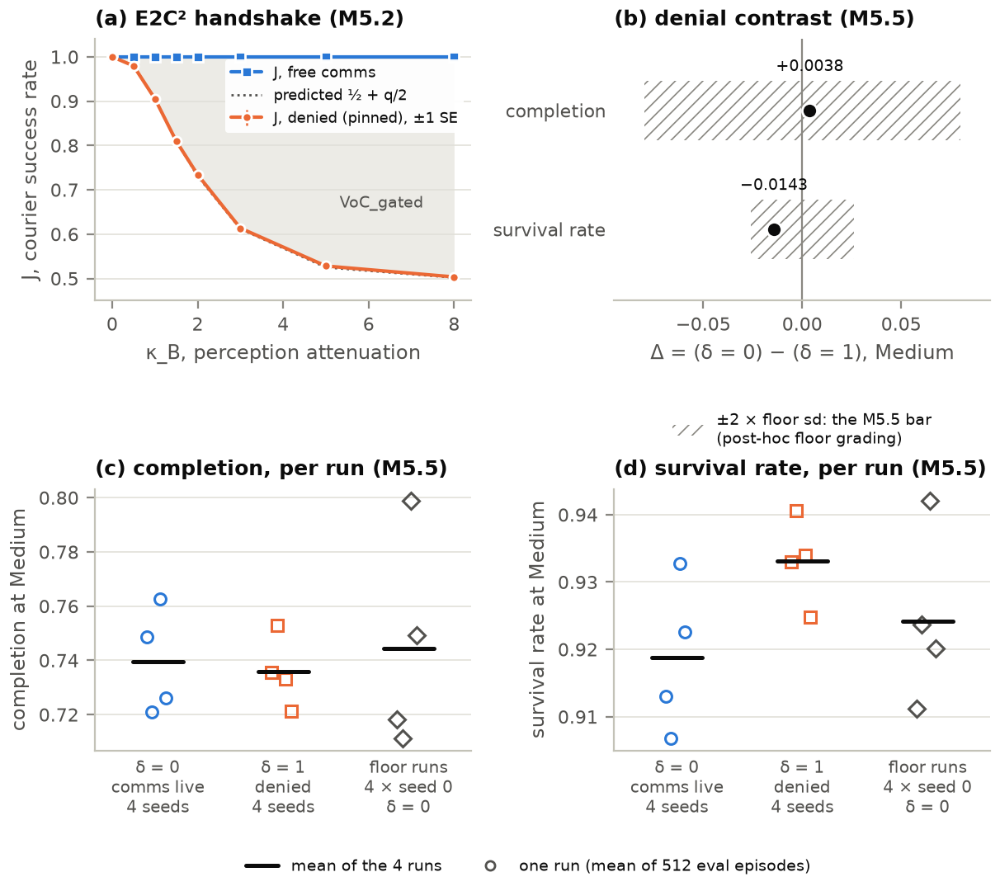
(a) The two-agent courier toy with scripted policies: success with free and with denied communication; the shaded gap is the value of communication. (b–d) The denial study at Medium: contrasts between open and denied links against bars of twice the floor sd, and the per-run values.
F The secondary design
Everything here is secondary and non-verdict-bearing, with 95 % intervals bootstrapped over seeds within arm (B = 2000), conditional on the common evaluation draw and not family-corrected. Each secondary arm has k = 20 seeds, trained on the GPU that ran Γ (Appendix D) with communication denial off in every component. Write μ for the per-coupling frequency (equal for the two couplings in every arm here), p for the co-occurrence and ν for the fire-only share, as in §6.2. On the triangle of training mixtures \(\nu = 1 - 2\mu + p\), so the active share is \(1 - \nu = 2\mu - p\). Figure 7 prints μ as m and ν as n; the arm names below are the labels of its table view.
| arm | μ | p | ν | active share | survival | completion |
|---|---|---|---|---|---|---|
sweep_c50_p000 |
0.5 | 0 | 0 | 1 | 0.9241 | 0.7847 |
sweep_c50_p125 |
0.5 | 0.125 | 0.125 | 0.875 | 0.9249 | 0.7775 |
sweep_c50_p250 |
0.5 | 0.25 | 0.25 | 0.75 | 0.9261 | 0.7797 |
sweep_c50_p375 |
0.5 | 0.375 | 0.375 | 0.625 | 0.9264 | 0.7656 |
sweep_c50_p500 |
0.5 | 0.5 | 0.5 | 0.5 | 0.9289 | 0.7749 |
ident_c40_p000 |
0.4 | 0 | 0.2 | 0.8 | — | — |
ident_c40_p200 |
0.4 | 0.2 | 0.4 | 0.6 | — | — |
ident_c40_p400 |
0.4 | 0.4 | 0.6 | 0.4 | — | — |
| ISO-4 (second GPU) | 0.5 | 0 | 0 | 1 | 0.9256 | 0.7726 |
The p = 0 sweep arm carries exactly ISO-4’s training mixture. Along the sweep, μ stays fixed while p and ν rise together, so the active share falls as co-occurrence rises; along the identification line the same holds 0.2 lower in active share.
| estimate (points) | survival | completion |
|---|---|---|
| sweep slope per unit p (labelled “dose slope”; separate fit) | +0.89 [−0.33, +2.11] | −2.51 [−9.43, +4.12] |
| sweep endpoint, p = 0.5 minus p = 0 | +0.48 [−0.21, +1.17] | −0.97 [−4.82, +2.87] |
| γp, the co-occurrence slope, per unit p | +3.26 [+1.37, +5.02] | +2.69 [−6.75, +12.45] |
| γn, the fire-only-share slope, per unit ν | −2.37 [−4.19, −0.57] | −6.52 [−15.34, +2.42] |
| bound, 0.5 γn | −1.19 [−2.10, −0.28] | −3.26 [−7.67, +1.21] |
| change point in p (labelled “knee”) | 0.375 [0.125, 0.375], UNDERPOWERED | 0.375 [0.125, 0.375], UNDERPOWERED |
| plane prediction of JOINT − ISO-4 (γp × 1) | §6.3 | +2.69; γp’s interval contains both measured values |
The plane \(y = \gamma_0 + \gamma_p p + \gamma_n \nu\) is a seed-level ordinary least squares (OLS) fit over all eight arms; \(\gamma_p\) is the co-occurrence slope and \(\gamma_n\) the fire-only-share slope. The bound, the fire-only share’s part of the sweep’s endpoint change, excludes zero on survival. The sweep slope is a separate seed-level OLS fit over the five sweep arms, with an isotonic fit by the pool-adjacent-violators algorithm (PAVA) giving its monotone shape. The plane’s slope along the sweep is \(\gamma_p + \gamma_n\), so the two need not agree, and on completion they do not. The change point is the breakpoint of the best single-hinge fit. Linearity is assumed and checked only coarsely: arm-mean residuals lie within ±0.4 SE on survival and ±1.1 SE on completion, 8 points for 3 parameters.
Because \(1 - \nu = 2\mu - p\), a step in \(\gamma_p\)’s direction at fixed ν moves μ by half as much as p, and a step in \(\gamma_n\)’s direction at fixed p moves μ too. Per-coupling frequency, co-occurrence and active share cannot all be held fixed on the triangle, so the plane separates co-occurrence from the active share only.
The same-GPU replicate of the correction subtracts the p = 0 sweep arm from JOINT, both trained on the GPU that ran Γ (§6.3):
| contrast | k | completion | survival | level |
|---|---|---|---|---|
| Γ₄′ = JOINT − the p = 0 sweep arm | 72 / 20 | −2.47 [−6.16, +1.22], z −1.50 | +0.13 [−0.56, +0.81], z +0.41 | Šidák-corrected 95 % |
| replicate difference: the p = 0 sweep arm − ISO-4 | 20 / 20 | +1.21 [−2.79, +5.20] | −0.15 [−0.86, +0.56] | 95 %, across GPUs |
The replicate is reported beside the registered Γ₄ and cannot change its reading.
Mediation is VOID. The registered mediator, the counter’s realized count during training, had a first-stage slope on p of −1.03 × 10⁻⁵, 95 % [−2.91 × 10⁻⁵, +0.93 × 10⁻⁵], and a rule fixed before the sweep was read voids the analysis when that interval contains zero (Appendix D). Diagnosed after the run, with the rule unchanged: the counter counts collapse-seeded ignitions inside an alive agent’s crop, which only Coupling A produces. In these mixtures it measures the Coupling-A frequency that the sweep holds fixed, and it cannot register co-occurrence.
Floors exist only for the sweep’s p = 0.5 arm: the other sweep arms assume that floor, and the identification arms are ungraded. The counter’s realized count is endogenous, so nothing here is its causal effect.
G The interaction check in full
The interaction check of §6.4 is post hoc. It was proposed after the registered result was known and was fixed in a written analysis plan before any of its evaluations ran. The analysis script refuses to run unless that plan is committed and unchanged and its hash matches the one the evaluation run recorded, so a later edit to the plan shows as a refusal. The supplement carries no version history, so the analysis does not run from it (§8). The check never joins the confirmatory family and changes no registered reading.
Each condition is θ* with only \(\kappa_A\) and \(\kappa_B\) changed: neither coupling (both 0), Coupling A only (\(\kappa_A = 0.06\), \(\kappa_B = 0\)), Coupling B only (\(\kappa_A = 0\), \(\kappa_B = 1.0\)), and both, which is θ* itself. β = 0.49, δ = 1.0 and every other fixed value stay at θ*’s. The three new configurations are generated from θ*’s file, and a test asserts that each loads to θ* with exactly its κ values replaced.
The policies are the final checkpoints, at update 1000, of every ISO and JOINT run (72 seeds each) and every ISO-4 run (20 seeds), each archive verified against its recorded sha256 before use. Each policy is evaluated in each condition on the registered draw, 512 episodes from evaluation seed 0, with actions sampled as trained. Because every condition uses the same seed, each policy meets the same initial states and random streams in all four, and the conditions differ only through the couplings. That gives 656 main evaluations and 36 more for the self-floor. The arms met the four conditions differently in training: ISO trained on each coupling alone with links intact and on neither coupling with links denied, ISO-4 only on each coupling alone with links intact, and JOINT only with every stressor on, all at β = 0.43 and 0.70, never at 0.49. This is why the arm rows are reported beside the pooled one.
For policy \(i\), \(J_i(c)\) is its mean completion or survival over the episodes in condition \(c\), and \(I_i\) is the contrast displayed in §6.4. An arm’s estimate is the mean of \(I_i\) over its seeds, with the standard error from their spread, which carries both seed and episode-sampling variation. The pooled estimate weights each arm by its number of seeds and does not assume that the arms share one \(I\). The family is three arms and the pool on two co-primaries, eight intervals, Šidák-corrected (z ≈ 2.73); the intervals are normal, as for the registered contrasts and Γ₄. Each estimate’s detection limit is its 80 %-power MDE from the observed standard error. Differences in \(I\) between arms are reported without a test. Outside the family and with no reading rule, the report also gives each arm’s four condition means and the main effects \(J(\text{A only}) - J(\text{neither})\) and \(J(\text{B only}) - J(\text{neither})\), which show whether each coupling alone moves the trained policies at θ*.
For the first-seed checkpoint of each arm, every condition is evaluated three more times on the run’s GPU, so each checkpoint and condition has four copies. The analysis reports whether the copies are bit-identical, their spread per metric and the spread of \(I\) across copies. Each condition is floored separately: the earlier finding that evaluations at θ* reproduce exactly on one GPU (§8) is not assumed for the other conditions. If any copy differs, a detectable reading also needs the estimate to exceed, in absolute value, twice the largest floor spread of \(I\), the post hoc two-sigma floor-grading convention. The “both” evaluation of every policy is also compared, descriptively, with the original evaluation of the same checkpoint at θ*, and the report states how many agree on both co-primaries.
An estimate shows a detectable interaction if its Šidák interval excludes zero and the floor check is met; its sign and size are then reported, for survival also in agents per episode (× 12). Otherwise it is an exclusion with its bound: \(\lvert I\rvert < B\) at the family-corrected level, where \(B\) is the larger absolute end of the interval, with the detection limit beside it. The pooled pair is the headline; the arm rows say whether the answer depends on how the policies were trained. If the floor or the comparison with the original evaluations cannot be computed, the analysis refuses rather than report part of the family. What the check is blind to is listed in §6.4; the arms’ training conditions are given above.
H Trained-policy episodes
Figures H1 and H2 show one episode of each confirmatory arm, chosen by a rule fixed before any render: θ*, episode key 0, stochastic actions, training seed 1 at update 1000. Each opens at step 128 of 256. They are illustrative and support no comparison between the arms.
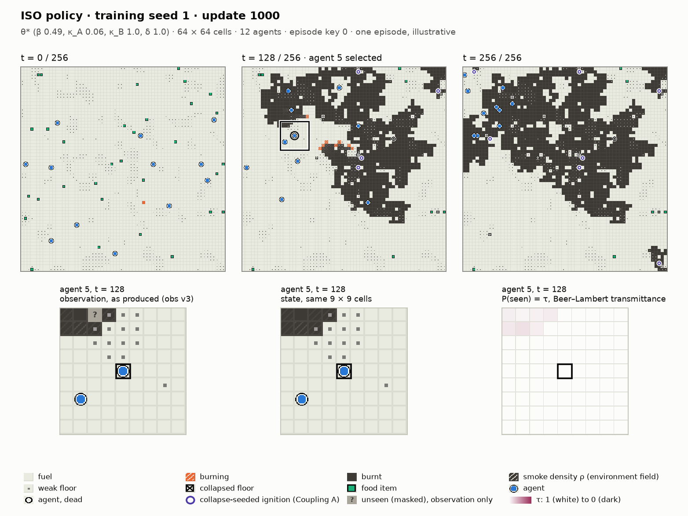
Figure H2 shows the JOINT policy’s episode under the same rule; one episode of one seed cannot carry a contrast measured over 72 seeds per arm and 512 evaluation episodes.
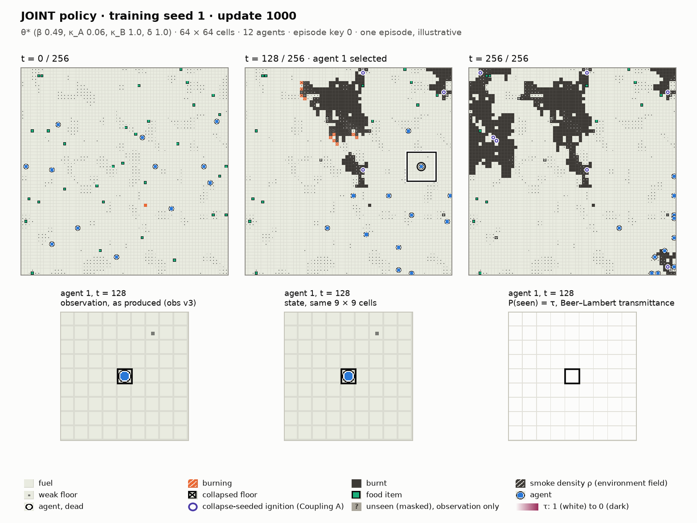
I How the literature search ran
We ran the literature search with the help of LLM-based research assistants, between August and October 2026. A census of benchmark venues and a search for theorems that could subsume ours came first; a search of domain randomization, environment design, multi-task and robust-learning neighbours followed. Both used web search and the arXiv API and read abstracts. The works §2 describes in detail were then read in full; the remaining citations rest on their abstracts. We did not query IEEE Xplore. Wherever this paper says that no work does something, it means no work found by this search.
J How this paper was made
This study was carried out by its authors with an LLM assistant, Claude (Anthropic), used through Claude Code. The authors made or ratified the study’s decisions, among them the environment’s design, the constants fixed before the main experiment, the registered design, the scope of the post hoc interaction check, the reading of the results and the framing of this paper. Some decisions are recorded as delegated to the assistant: on the authors’ instruction, the assistant made the remaining design decisions before the GPU rental, among them the seed layout, the run order, the branch rules and the ratification of the registered outcome framings, and the authors gave avoiding their own bias as the reason. A few later rulings were the assistant’s call at the authors’ request. From early in the project, a decision bound only once it was written into the project’s dated decision record; before that rule, some directives existed only in conversation.
The analysis plan of the post hoc interaction check was written by the assistant, and no approval of it by the authors is yet recorded. The assistant implemented the code and tests to these decisions, ran analyses on the authors’ instruction, drafted reports, figures and reviews of the design, proposed options for the authors to accept or reject, and drafted this paper’s text section by section.
Some proposals came from the assistant. In particular, the inert-share bias in the isolated arm and the correcting arm ISO-4 were first raised in an assistant-drafted review of the registered design, and the authors adopted both and registered them before unblinding (Appendix D).
Every sentence of this paper has a provenance record that ties it to a decision, a row of the numbers ledger or a committed file, and every number in the text comes from that ledger, whose rows cite the file and line they were read from or show their derivation. Separate assistant instances reviewed the drafts. The authors checked every word and are responsible for the whole.